Conception, Pregnancy, and Childbirth
The real biology of how a pregnancy begins, unfolds across three trimesters, and ends in birth and recovery — and why so much of what movies taught us about it is wrong.
The Story We're Told
You already know how this story goes. Millions of sperm line up like sprinters, a gun goes off, and the fastest, strongest swimmer muscles to the front and wins the egg. Nine months later, the water breaks while mom is shopping for groceries. She's whisked off to the hospital for a "natural" birth — one without medication or machines — which is, of course, the best way to bring a baby into the world. A baby is born, gets laid on its mother's chest in the first golden minutes, and a bond snaps into place that will shape them both for the rest of their lives.
Here is the problem. Every one of those things is either flat wrong or so oversimplified that it's downright misleading. This is the way pregnancy and childbirth are portrayed in movies and TV shows, but real life is much more varied, messy, and complicated.
That gap is what this chapter is about. Conception, pregnancy, and childbirth are some of the most crucial but misunderstood events in human life — wrapped in folklore, marketing, and well-meaning advice that often has the facts backward. As you'll soon read, the true version is far more interesting than the montage.
7.1 Conception
Conception is the starting line of every pregnancy, and it is also where the myths begin. The popular picture — a frantic race won by the single strongest swimmer — gets almost every detail wrong. What actually happens is stranger, slower, and more selective than the cartoon suggests.
The Journey to the Egg: It's Not a Race
You've probably seen the cartoon version of conception. There's a race between millions of sperm, with only the fastest one claiming victory! It's a great story. It's also mostly wrong (Eisenbach & Giojalas, 2006)Full ReferenceEisenbach, M., & Giojalas, L. C. (2006). Sperm guidance in mammals: An unpaved road to the egg. Nature Reviews Molecular Cell Biology, 7(4), 276–285..
Start with the numbers. A typical ejaculate holds 100 to 300 million sperm. Of those, only a few hundred ever make it anywhere near the egg (Williams et al., 1993)Full ReferenceWilliams, M., Hill, C. J., Scudamore, I., Dunphy, B., Cooke, I. D., & Barratt, C. L. R. (1993). Sperm numbers and distribution within the human Fallopian tube around ovulation. Human Reproduction, 8(12), 2019–2026.. The trip is brutal, and most sperm never get past the early obstacles. But the survivors don't simply out-sprint everyone else. They're guided, and they're filtered.
Think of the female reproductive tract less like a racetrack and more like a long trail with a series of checkpoints and a helpful but picky trail guide. The tract screens out sperm that are damaged or poorly shaped. Only sperm of high quality are allowed to reach the egg.
Sperm aren't even ready to fertilize anything when they first arrive. They have to be "switched on" inside the female tract through a ripening step called capacitationCapacitationThe final maturation step sperm undergo inside the female reproductive tract that makes them capable of fertilizing an egg.View in glossary →. Picture hikers reaching the trailhead and only then unpacking and gearing up for the real climb (Eisenbach & Giojalas, 2006)Full ReferenceEisenbach, M., & Giojalas, L. C. (2006). Sperm guidance in mammals: An unpaved road to the egg. Nature Reviews Molecular Cell Biology, 7(4), 276–285..
Once they're geared up, how do the sperm find their way? Researchers have found three guidance systems working together:
- Swimming against the current (rheotaxisRheotaxisThe tendency of sperm to orient and swim against the direction of fluid flow in the reproductive tract, which happens to steer them toward the egg.View in glossary →). Fluid in the tract flows gently in one direction, and sperm instinctively turn and swim against it, like a fish nosing upstream. Heading into the current happens to point them the right way (Miki & Clapham, 2013)Full ReferenceMiki, K., & Clapham, D. E. (2013). Rheotaxis guides mammalian sperm. Current Biology, 23(6), 443–452..
- Following the warmth (thermotaxisThermotaxisMovement guided by temperature; sperm sense the slightly warmer region near the egg and steer toward the heat.View in glossary →). The spot where the egg waits is slightly warmer than where the sperm pause to gear up. Sperm can sense that tiny temperature difference and steer toward the heat (Bahat et al., 2003)Full ReferenceBahat, A., Tur-Kaspa, I., Gakamsky, A., Giojalas, L. C., Breitbart, H., & Eisenbach, M. (2003). Thermotaxis of mammalian sperm cells: A potential navigation mechanism in the female genital tract. Nature Medicine, 9(2), 149–150..
- Following the scent (chemotaxisChemotaxisMovement directed by chemical signals; sperm detect molecules released near the egg and home in on their source.View in glossary →). As they get close, sperm pick up chemical signals given off near the egg, almost like following a smell to its source, and home in (Eisenbach & Giojalas, 2006)Full ReferenceEisenbach, M., & Giojalas, L. C. (2006). Sperm guidance in mammals: An unpaved road to the egg. Nature Reviews Molecular Cell Biology, 7(4), 276–285..
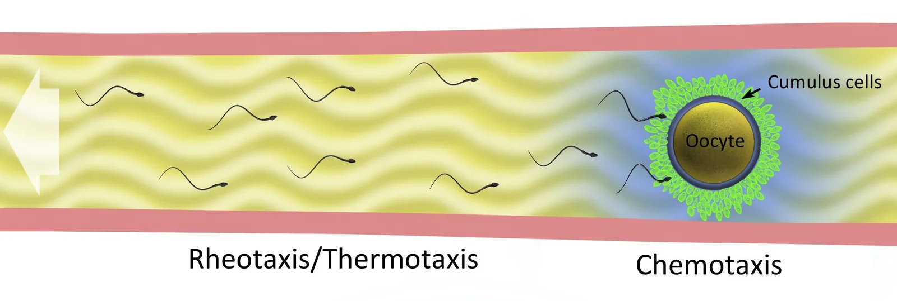
So, the real story isn't a brawl won by the toughest sperm or fastest swimmer. It's a guided journey, with the egg and the tract sending out signals that steer a small, healthy group of travelers toward the finish line. Among the sperm that make it, is the "winner" basically random, or does the female body get a say in which one succeeds? Scientists are still working that out.
A handful of recent studies hint that it may not be random. In lab experiments, researchers mixed sperm from different men with fluid from different women's reproductive tracts. Some pairings worked noticeably better than others. The fluid seemed to help certain men's sperm and not others. It even seemed to chemically attract some sperm over others (Fitzpatrick et al., 2020; Jokiniemi et al., 2020)ReferencesFitzpatrick, J. L., Willis, C., Devigili, A., Young, A., Carroll, M., Hunter, H. R., & Brison, D. R. (2020). Chemical signals from eggs facilitate cryptic female choice in humans. Proceedings of the Royal Society B, 287(1928), 20200805. | Jokiniemi, A., Kuusipalo, L., Ritari, J., Koskela, S., Partanen, J., & Kekäläinen, J. (2020). Post-copulatory genetic matchmaking: HLA-dependent effects of cervical mucus on human sperm function. Proceedings of the Royal Society B, 287(1933), 20201682.. Studies in animals point in a similar direction (Løvlie et al., 2013)Full ReferenceLøvlie, H., Gillingham, M. A. F., Worley, K., Pizzari, T., & Richardson, D. S. (2013). Cryptic female choice favours sperm from major histocompatibility complex-dissimilar males. Proceedings of the Royal Society B, 280(1769), 20131296.. The idea that the uterus and other female reproductive organs may "select" for the healthiest sperm is known as cryptic female choiceCryptic Female ChoiceThe proposed ability of the female reproductive tract to favor some sperm over others after mating. It is "cryptic" because the exact mechanisms are still unknown.View in glossary →. It's "cryptic" because scientists still aren't sure what mechanisms are being employed to make this choice.
Fertilization: Sperm Meets Egg
Compared to a sperm, the egg is enormous, and it doesn't sit there unprotected. It's wrapped in a tough, jelly-like shell called the zona pellucidaZona PellucidaThe tough, glycoprotein "shell" surrounding the egg that a sperm must penetrate to fertilize it.View in glossary →, with a cloud of helper cells around it.
When a sperm reaches the egg, a small compartment on the sperm, known as the acrosome capAcrosome CapThe enzyme-filled cap on the head of a sperm; it bursts to dissolve a path through the egg's outer coating.View in glossary →, bursts open, releasing enzymes that dissolve a tunnel through the jelly shell. The sperm wriggles through and, if successful, fuses with the egg.

The instant one sperm gets in, the egg reacts within seconds. It sets off a dramatic burst of zinc, nicknamed the "zinc spark," that hardens the outer shell so no other sperm can bind or break through (Duncan et al., 2016; Que et al., 2017)ReferencesDuncan, F. E., Que, E. L., Zhang, N., Feinberg, E. C., O'Halloran, T. V., & Woodruff, T. K. (2016). The zinc spark is an inorganic signature of human egg activation at fertilization. Scientific Reports, 6, 24737. | Que, E. L., Duncan, F. E., Bayer, A. R., Philips, S. J., Roth, E. W., Bleher, R., Gleber, S. C., Vogt, S., Woodruff, T. K., & O'Halloran, T. V. (2017). Zinc sparks induce physiochemical changes in the egg zona pellucida that prevent polyspermy. Integrative Biology, 9(2), 135–144.. This is to block the possibility of multiple sperm fertilizing the egg at once, a process known as polyspermyPolyspermyFertilization of a single egg by more than one sperm. It produces too many chromosomes and is not viable, so the egg blocks it immediately.View in glossary →. The math has to be exact: one sperm, one egg. If multiple sperm fertilized the egg, the new cell would carry too many chromosomes and wouldn't survive.
Where does all of this happen? Not in the uterus, as many people assume, but out near the far end of the fallopian tube (Silverthorn, 2013)Full ReferenceSilverthorn, D. U. (2013). Human physiology: An integrated approach (6th ed.). Pearson Education.. The egg barely makes it away from the ovary before a sperm reaches it. The result is a single new cell carrying DNA from both partners, the first cell of a possible new person. From here it begins to divide and drift down toward the uterus, where it may eventually implant and begin the process of gestation.
Which statement best reflects what modern research says about how sperm reach the egg?
Detecting a Pregnancy
For most people, the first hint that something has changed is a missed period. It is a classic sign of pregnancy, but it is not solid proof. Stress, illness, big swings in weight or exercise, and irregular cycles can all delay a period or skip one entirely. Early pregnancy tends to bring other clues too: tender or tingling breasts, more trips to the bathroom, fatigue, and nausea known as morning sickness. But even when all of these signs are present, it's important to take a pregnancy test to make sure.
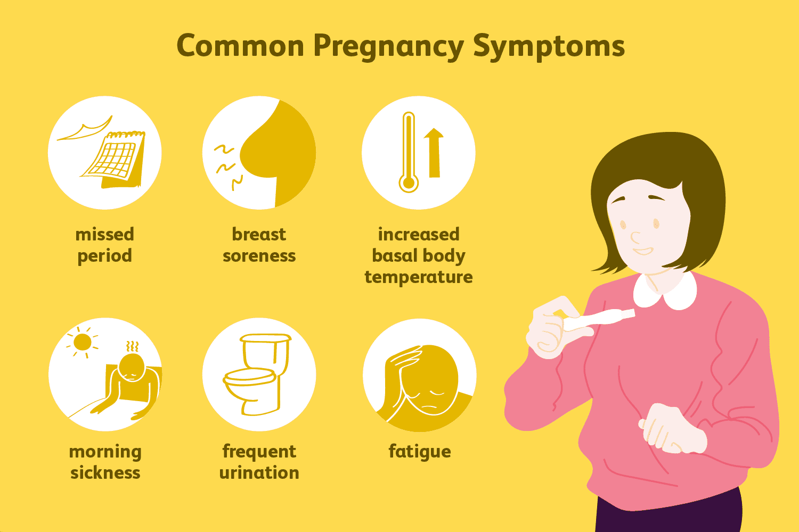
Pregnancy tests tend to detect human chorionic gonadotropinHuman Chorionic Gonadotropin (hCG)The hormone produced by the developing placenta after implantation. Because only a pregnancy makes it, detecting hCG is a reliable sign of pregnancy.View in glossary →, or hCG, which dramatically increases during the early stages of pregnancy. The developing placenta starts pumping out hCG soon after the embryo implants in the wall of the uterus. Because only a pregnancy produces it, finding hCG in the body is a reliable sign that a person is pregnant. The hormone first appears about a week to ten days after fertilization, then climbs fast, roughly doubling every two to three days in the early weeks (Cleveland Clinic, 2026)Full ReferenceCleveland Clinic. (2026). Pregnancy tests: When to take, types & accuracy. <https://my.clevelandclinic.org/health/diagnostics/9703-pregnancy-tests>. If a pregnancy test is done too early — before hCG has time to peak — then it can return a false negative. False negativesFalse NegativeA test result that says a person is not pregnant when they actually are — common when a test is taken too early, before hCG has built up.View in glossary → occur when a test states that the person isn't pregnant, when they actually are. This can be problematic, as it can lead someone to believe it's okay to drink, smoke, or do other activities that may harm a new pregnancy.
A home pregnancy test is a urine test you can buy over the counter and use in a few minutes. Used correctly on or after the day of a missed period, the major brands claim accuracy around 99 percent (Mayo Clinic, 2022)Full ReferenceMayo Clinic. (2022). Home pregnancy tests: Can you trust the results? <https://www.mayoclinic.org/healthy-lifestyle/getting-pregnant/in-depth/home-pregnancy-tests/art-20047940>. The catch is the phrase "on or after." Test too early, before hCG has built up, and you can get a false negative. A few "early" tests advertise results several days before a missed period, but their accuracy drops the earlier you go (Cleveland Clinic, 2026)Full ReferenceCleveland Clinic. (2026). Pregnancy tests: When to take, types & accuracy. <https://my.clevelandclinic.org/health/diagnostics/9703-pregnancy-tests>. Two simple habits help: use the first urine of the morning, when hCG is most concentrated, and if an early test reads negative but your period still does not arrive, test again in a few days (Mayo Clinic, 2022)Full ReferenceMayo Clinic. (2022). Home pregnancy tests: Can you trust the results? <https://www.mayoclinic.org/healthy-lifestyle/getting-pregnant/in-depth/home-pregnancy-tests/art-20047940>.
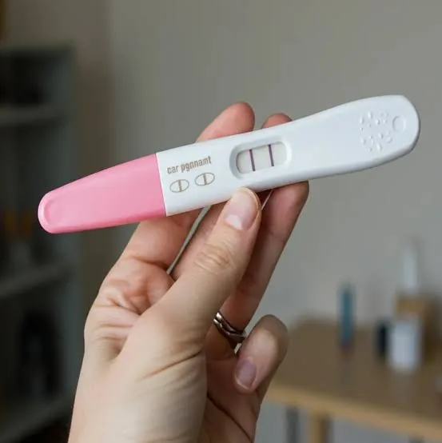
A blood test, run at a clinic, is the other option. It can pick up hCG earlier than a urine test, can measure the exact amount, and from that amount can help estimate how far along a pregnancy is (Cleveland Clinic, 2026)Full ReferenceCleveland Clinic. (2026). Pregnancy tests: When to take, types & accuracy. <https://my.clevelandclinic.org/health/diagnostics/9703-pregnancy-tests>. It costs more and means a trip to a provider, so it is used most when an early or precise answer matters medically.
Those few minutes waiting for a result are among the more emotionally loaded a person can have. The very same plus sign can land as the best news of someone's life or as a quiet catastrophe, depending entirely on whether the pregnancy is wanted. One person sees a future they have been hoping for; another sees school, work, money, or a relationship thrown into question. We carry that whole range into the rest of the chapter, because pregnancy is never only a biological event. It always arrives inside a particular life.
A friend takes a home pregnancy test several days before her missed period and gets a negative result, but her period never comes. What is the most likely explanation?
7.2 Pregnancy and Prenatal Development
Pregnancy tends to get described as a single condition, the way we say someone "is pregnant" as though it were one steady state stretched across nine months. Living through it is closer to three distinct seasons, each with its own rapidly changing body inside and its own version of the person carrying it. Clinicians mark those seasons as the three trimestersTrimesterOne of the three roughly three-month stages of pregnancy, each with distinct developmental milestones and bodily changes.View in glossary →, roughly three months apiece.
A pregnancy is dated from the first day of the last menstrual period (LMP)Last Menstrual Period (LMP)The first day of the most recent period, used as the standard starting point for dating a pregnancy because it is easier to identify than the day of conception.View in glossary →, not from the day of conception. The reason is practical: most people can name the day their last period started, while very few know the exact day a sperm met an egg. This can create confusion when thinking about gestation, or how long a fertilized egg has been growing. If a person is "4 weeks pregnant," meaning it's been 4 weeks since their last period, they've likely only been gestating a fertilized egg for about 2 weeks. A full-term pregnancy takes about 40 weeks using this method, but if you discount the first 2 weeks, then a pregnancy is about 9 months long. We will be using the LMP method of counting pregnancy weeks throughout the textbook.
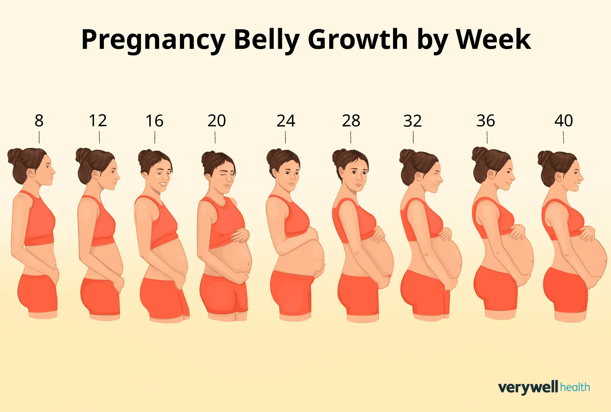
Nutrition and Prenatal Care
A pregnant body needs more of certain raw materials than usual, because it is building tissue, blood, and bone from scratch. Protein supplies the building blocks for new tissue. The fetus pulls iron from the blood circulating to the placenta, which can leave the pregnant person anemic and exhausted if iron intake is too low. Calcium goes into the baby's developing skeleton, and a shortage of this mineral is linked to high blood pressure in the parent. A good diet covers most of this, and a daily prenatal vitamin can help fill in the gaps.
Folic acidFolic AcidA B vitamin essential for forming the neural tube. Adequate intake before and in early pregnancy cuts the risk of neural tube defects such as spina bifida by at least half.View in glossary →, a B vitamin, is essential for building the neural tube, the early structure that becomes the brain and spinal cord. The embryo's neural tube (the beginnings of the brain and spinal cord) finishes development within the first 3 to 4 weeks after conception, often before a person even knows they are pregnant. Getting 400 micrograms of folic acid a day before conception and through early pregnancy decreases the risk of neural tube defects such as spina bifida by at least half (CDC, 2025a)Full ReferenceCenters for Disease Control and Prevention. (2025a). Folic acid: Facts for clinicians. <https://www.cdc.gov/folic-acid/hcp/clinical-overview/index.html>. Because roughly half of pregnancies are unplanned, the standard advice is for anyone who could become pregnant to get folic acid daily, well before a pregnancy is on the radar.
The old instruction to "eat for two" is one of the stickier pregnancy myths. A fetus is tiny for most of the pregnancy and does not need a second adult's worth of food. For the entire first trimester, the recommended increase is essentially zero extra calories. Even in the final months of pregnancy, a pregnant person should only consume a few hundred extra calories a day, which is closer to a snack than a second dinner. What the body needs is not twice the quantity of food but better quality: more protein, iron, calcium, and folate.
Why is the standard advice for anyone who could become pregnant to take folic acid daily, even before they are trying to conceive?
The First Trimester (Weeks 1 to 13)
From One Cell to an Embryo
The single cell formed at fertilization does not stay single for long. As it drifts down the fallopian tube toward the uterus, it divides again and again, and within a few days it has become a hollow ball of cells called a blastocystBlastocystThe hollow ball of cells that forms a few days after fertilization; its outer layer becomes the placenta and its inner cluster becomes the embryo.View in glossary →. That ball has already split into a working crew and a future passenger. The outer layer will build the placentaPlacentaThe organ at the uterine wall where the parent's and fetus's blood run close enough to exchange oxygen, nutrients, and waste without mixing; it also produces pregnancy hormones.View in glossary → and an inner cluster will eventually become the embryo. Around a week after fertilization, the blastocyst burrows into the blood-rich lining of the uterus, a step called implantationImplantationThe embedding of the blastocyst into the uterine lining about a week after fertilization; it marks the start of hCG release.View in glossary →. This is the moment the pregnancy plugs into the parent's body, and it is when the placenta starts releasing the hCG that a pregnancy test is designed to detect.
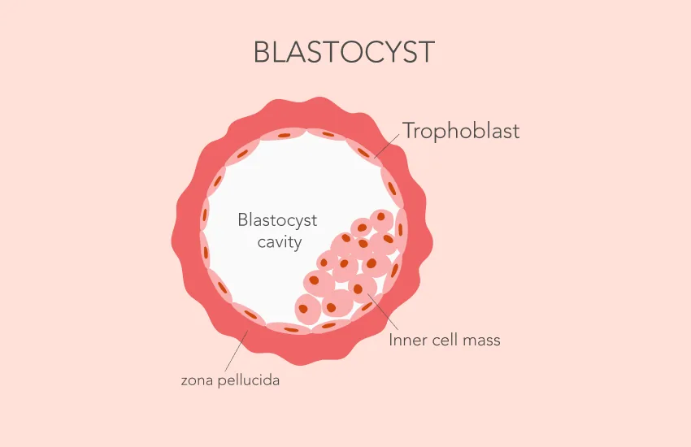
For the next several weeks the passenger is called an embryoEmbryoThe developing organism from implantation through about the 12th week, while the basic organs and body structures are first being laid down.View in glossary →, and it is laying down the rough draft of nearly everything: the beginnings of a heart, a brain and spinal cord, a digestive tract, and the buds that eventually become arms and legs. By the end of the 12th week, the embryo looks unmistakably human, with fingers, toes, eyelids, and a heartbeat a provider can detect. From this point on it is called a fetusFetusThe developing organism from about the 12th week until birth, once all major organ groups are present (though not yet fully developed).View in glossary → (Cunningham et al., 2010)Full ReferenceCunningham, F. G., Leveno, K. J., Bloom, S. L., Hauth, J. C., Rouse, D. J., & Spong, C. Y. (2010). Williams obstetrics (23rd ed.). McGraw-Hill.. The major difference between an embryo and fetus is that a fetus has all of its organ groups, although they're not all fully developed. Because so many major structures are being built in these first weeks, the first trimester is also the most vulnerable stretch of the whole pregnancy. A harmful exposure does the most damage when an organ is under construction, which is why doctors advise pregnant people to avoid certain substances during this time. We'll revisit this topic in another section.
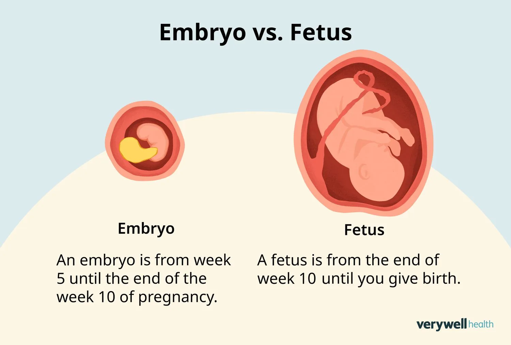
The Support System
Three structures keep the fetus alive throughout a pregnancy. The placenta is the surface of the uterus, where the parent's blood and the fetus's blood run close enough to trade goods without ever mixing. Oxygen and nutrients cross from parent to fetus; carbon dioxide and waste cross back the other way. The placenta filters out many threats, so a parent can have a nasty cold while the fetus stays virus-free. However, the filter is not perfect. Some viruses and many drugs can slip across the barrier, which is the reason a pregnant person has to be careful about what enters their body. The placenta is also a hormone factory, producing the estrogen and progesterone that keep the pregnancy stable, plus the hCG that encourages rapid growth.
The umbilical cordUmbilical CordThe flexible supply line carrying blood between the fetus and the placenta; its attachment point becomes the belly button after birth.View in glossary → is the supply line that runs between the fetus and the placenta, carrying blood back and forth through about twenty inches of flexible tubing. The spot where it attaches becomes the belly button after birth. The amniotic sacAmniotic SacThe fluid-filled membrane surrounding the fetus that cushions it and keeps its temperature stable.View in glossary → is like a padded room. The fetus floats inside it in warm amniotic fluidAmniotic FluidThe warm liquid inside the amniotic sac that holds a steady temperature and cushions the fetus from outside jolts.View in glossary →, which holds a steady temperature and cushions every bump from the outside world. If the pregnant person trips and falls, the fluid absorbs the jolt and the fetus rides it out undisturbed. It is, in effect, the original waterbed.
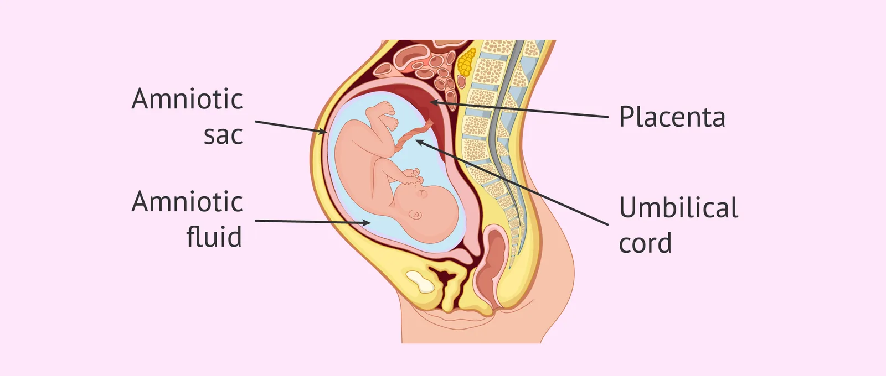
Teratogens
These early organ systems, such as the developing brain and spinal cord, are especially vulnerable during the first trimester. A teratogenTeratogenAny substance that crosses into the developing fetus and disrupts its development. Timing matters: the same exposure is far more harmful while organs are forming.View in glossary → is any substance that crosses into the developing fetus and disrupts its development. The placenta filters out many threats, but plenty of drugs and a few viruses can slip across. Timing is everything with teratogens. The same exposure that does little late in pregnancy can be devastating during the first trimester, when organs are under construction.
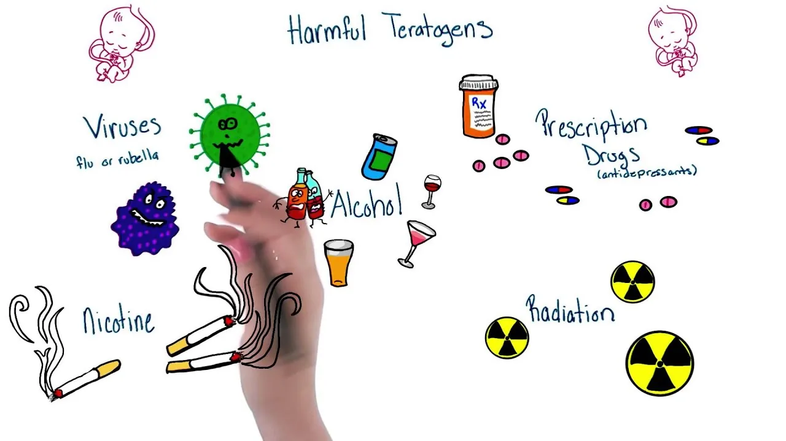
Arguably, the most common teratogen that threatens fetal development is alcohol, which crosses the placental barrier freely. There is no known safe amount and no safe time to drink during pregnancy (CDC, 2026)Full ReferenceCenters for Disease Control and Prevention. (2026). About alcohol use during pregnancy. <https://www.cdc.gov/alcohol-pregnancy/about/index.html>. Prenatal alcohol exposure causes fetal alcohol spectrum disorders (FASD)Fetal Alcohol Spectrum Disorders (FASD)An umbrella term for the range of lifelong physical, cognitive, and behavioral effects caused by prenatal alcohol exposure.View in glossary →, an umbrella term for a range of lifelong physical, cognitive, and behavioral effects. The most severe form, fetal alcohol syndromeFetal Alcohol SyndromeThe most severe form of FASD, marked by distinctive facial features, growth problems, and intellectual disability.View in glossary →, brings a distinctive set of facial features, growth problems, and intellectual disability, and alcohol is the leading preventable cause of intellectual disability. Heavy drinking also raises the risk of stillbirth (Aliyu et al., 2008)Full ReferenceAliyu, M. H., Wilson, R. E., Zoorob, R., Chakrabarty, S., Alio, A. P., Kirby, R. S., & Salihu, H. M. (2008). Alcohol consumption during pregnancy and the risk of stillbirth among singletons. Alcohol, 42(5), 369–374.. FASD is not rare: studies estimate it affects somewhere between 1 and 5 percent of U.S. schoolchildren (May et al., 2018)Full ReferenceMay, P. A., Chambers, C. D., Kalberg, W. O., Zellner, J., Feldman, H., Buckley, D., Hoyme, H. E., et al. (2018). Prevalence of fetal alcohol spectrum disorders in 4 US communities. JAMA, 319(5), 474–482..
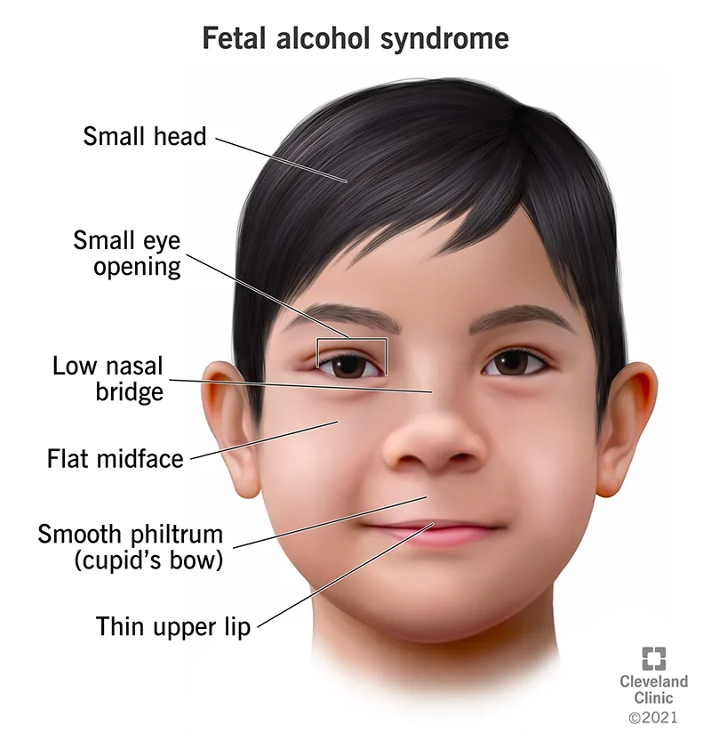
In general, the first trimester is one where the expectant parent should be cautious about what they put into their bodies. Stay away from alcohol, tobacco, marijuana, and other toxic substances. Drinking coffee in moderation appears to be safe, even during this stage, although pregnant people should drink no more than 2 cups a day (equivalent to 200 mg of caffeine; CDC, 2025b)Full ReferenceCenters for Disease Control and Prevention. (2025b). Substance use during pregnancy. <https://www.cdc.gov/maternal-infant-health/pregnancy-substance-abuse/index.html>.
Why is the first trimester considered the most vulnerable period for teratogen exposure?
What the Mother Feels
Most of the early symptoms of pregnancy trace back to a single cause: a flood of hormones. hCG climbs steeply in the first weeks, and estrogen and progesterone rise alongside it, first from the corpus luteum left behind at ovulation and then, by about week 12, from the placenta taking over the job.
The most famous of these symptoms is morning sicknessMorning SicknessThe nausea and queasiness of early pregnancy. Despite the name, it can strike at any hour and usually fades by the second trimester.View in glossary →, the nausea and queasiness that affects roughly 70 percent of pregnant people (Einarson et al., 2013)Full ReferenceEinarson, T. R., Piwko, C., & Koren, G. (2013). Quantifying the global rates of nausea and vomiting of pregnancy: A meta-analysis. Journal of Population Therapeutics and Clinical Pharmacology, 20(2), e171–e183.. Despite the name, the sickness can strike at any hour, and most people who get it feel nausea on and off throughout the day, rather than only at dawn. It can also worsen when a pregnant person is tired or running on an empty stomach. For most, it is a miserable but harmless experience, and fades by the second trimester. For around 1 percent, it becomes hyperemesis gravidarumHyperemesis GravidarumA severe form of pregnancy nausea with relentless vomiting and weight loss that can require hospital treatment.View in glossary →, a severe form with relentless vomiting and weight loss that can require hospital treatment.
Other early changes pile on: tender or tingling breasts, deep fatigue, frequent urination, food cravings, and sudden aversions to foods or smells that were fine a week earlier. Many of these overlap with ordinary premenstrual symptoms, which is exactly why the early signs alone cannot confirm a pregnancy.
The Couple's Experience
For expectant parents, the first trimester is often a tangle of opposite feelings. There are excitement and a sense of accomplishment, but also a sense of anxiety. People may be wary about all the bodily changes they're experiencing. New parents may also be anxious about the responsibility of caring for their first child. The first trimester carries the highest risk of miscarriage, which can also concern many couples. We'll be covering that topic in more detail later in the chapter.
There is also a built-in asymmetry that can strain a relationship. For the pregnant person, the pregnancy is concrete from day one, because their body is the thing changing. For a partner, it can stay abstract for weeks, an idea more than an experience. Eventually, an ultrasound image or a first kick can make it feel more real for them. That gap in felt reality is normal, but couples who do not see it coming sometimes read it as the partner not caring, when it is closer to the partner not yet "feeling" the pregnancy affect them.
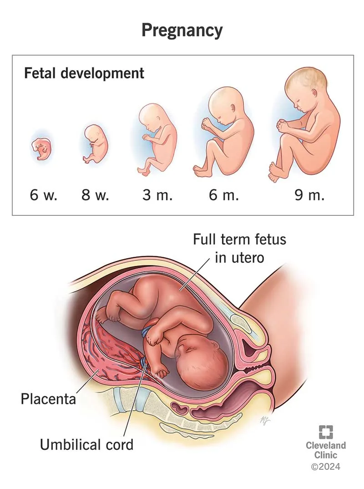
The Second Trimester (Weeks 14 to 27)
If the first trimester is the rough patch, the second is often the reward. For most people the nausea lifts, energy comes back, and the other symptoms of pregnancy become much more manageable.
The Developing Fetus
The fetus grows fast now and starts doing recognizably human things. Sometime around weeks 16 to 20, the pregnant person feels the first flutters of movement, a milestone called quickeningQuickeningThe first fetal movements a pregnant person can feel, usually between weeks 16 and 20.View in glossary →. First-time parents often notice it later than people who have been pregnant before, simply because they are not yet sure what they are feeling. By the middle of the trimester the fetus can hear, responds to light, and goes through cycles of rest and activity.
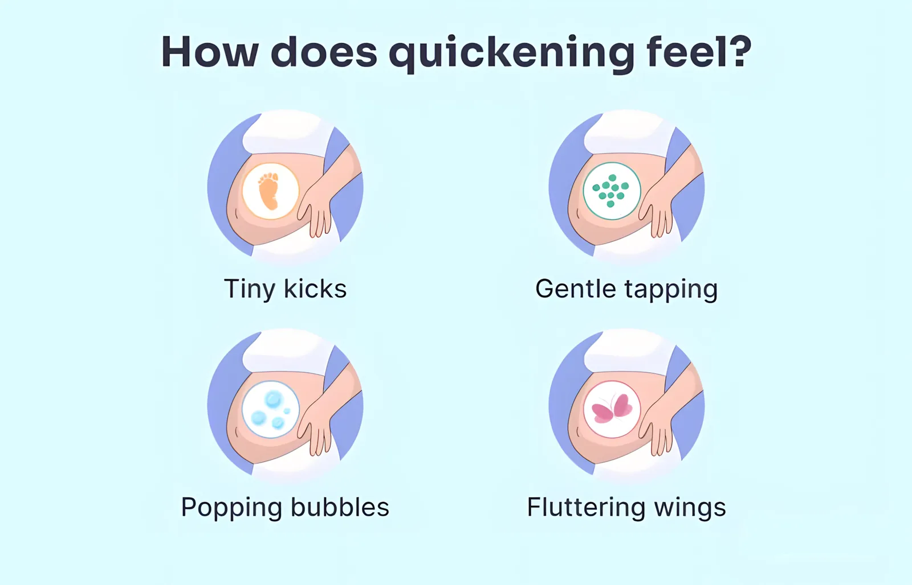
This trimester is also where the concept of viabilityViabilityThe point at which a fetus could survive outside the womb, currently around 22 to 24 weeks, with survival rising steeply each added week.View in glossary → enters the picture, meaning the point at which a fetus could survive outside the womb. Early in the second trimester, the lungs are far too immature to move oxygen on their own. The edge of viability currently sits around 22 to 24 weeks, and survival climbs steeply with each added week. In a large 2024 study of U.S. neonatal intensive care units, survival rose from about 25 percent for infants born at 22 weeks to about 82 percent for those born at 25 weeks (Edwards et al., 2024)Full ReferenceEdwards, E. M., Ehret, D. E. Y., Soll, R. F., & Horbar, J. D. (2024). Survival of infants born at 22 to 25 weeks' gestation receiving care in the NICU: 2020–2022. Pediatrics, 154(4), e2024065963.. Below roughly 22 weeks, survival remains extremely rare even with the best available care. These are sobering numbers, but they also mark how far newborn medicine has come, since births earlier than 30 weeks used to be almost uniformly fatal a few decades ago.
Around 20 weeks, an ultrasound, or sonogram, is typically performed to track growth and show the baby's position. By bouncing sound waves off the fetus, it dates the pregnancy and maps out its anatomy. These procedures are non-invasive and considered safe, which is why nearly every pregnancy gets at least one.
"Viability" refers to the point at which a fetus could survive outside the womb. Where does the edge of viability currently sit, and why does it matter so much?
What Changes for the Mother
With hCG leveling off, the early-pregnancy nausea fades for most people by about week 13. A stretch of relative comfort and energy follows. The increase in blood volume that supports the pregnancy can give skin the warm, flushed look people call the "pregnancy glow." This extra blood volume can cause edemaEdemaMild swelling of the hands and feet caused by the increased blood and fluid volume of pregnancy.View in glossary →, a mild swelling of the hands and feet.
Several visible changes arrive during this trimester. The uterus, normally about the size of a pear, expands to dozens of times its prior size and pushes the surrounding organs upward. Around this time, many people find they can no longer eat a large meal and have to switch to smaller, more frequent ones. The growing uterus presses on the bladder, which usually means more bathroom trips throughout the day (and night). The breasts enlarge and the areolae darken as the body prepares to feed a newborn. Some people start to produce tiny amounts of colostrumColostrumThe thick, antibody-rich early milk produced in late pregnancy and the first days after birth, giving the newborn an early dose of immune protection.View in glossary →, the rich early milk, around this time. Stretch marks may appear across the belly and breasts as the pregnant person puts on about a pound a week.
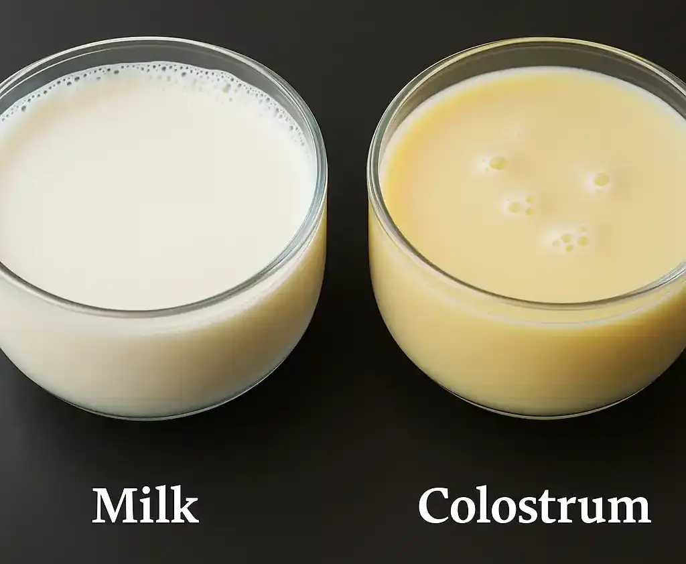
The Couple's Experience
Emotionally, the second trimester tends to be the calm in the middle. The anxieties of the first trimester have eased, the worries about labor are not yet pressing, and the pregnancy feels more secure. It is often the point where a partner finally connects to the pregnancy in a felt way. Watching an ultrasound and placing a hand on the belly to feel the baby kick turns the abstract into something real. That shared, physical experience tends to draw couples closer, and a supportive partner during this stretch is one of the better predictors of lower anxiety as the pregnancy goes on.
The Third Trimester (Weeks 28 to 40)
The home stretch is the most physically taxing part of the journey. The fetus is finishing its preparations for life outside, and the pregnant person is carrying a great deal more than they were three months earlier.
The Developing Fetus
In these final months, the brain and nervous system mature rapidly. The lungs also do their last and most important fine-tuning, which is why even an extra week or two in the womb can meaningfully improve a newborn's odds of survival. The fetus is also packing on the fat that will help it regulate temperature after birth.
Most fetuses settle head-down in preparation for delivery, a position called cephalic presentationCephalic PresentationThe head-down position most fetuses settle into before birth, the safest orientation for a vaginal delivery.View in glossary →. A small share do not, however, with about 3–4% presenting bottom-first or feet-first at term. This is known as a breechBreechA fetal position that is bottom-first or feet-first rather than head-down at term; it often leads to a cesarean delivery.View in glossary → presentation (ACOG, 2020)Full ReferenceAmerican College of Obstetricians and Gynecologists. (2020). External cephalic version (ACOG Practice Bulletin No. 221). Obstetrics & Gynecology, 135(5), e203–e212.. Breech is far more common earlier in pregnancy and becomes rarer as the due date approaches, since most fetuses turn on their own in the final weeks. When a fetus stays breech, a provider may try to coax it head-down by pressing on the abdomen, a maneuver called external cephalic versionExternal Cephalic VersionA procedure in which a provider presses on the abdomen to try to turn a breech fetus into a head-down position.View in glossary →. If the fetus remains breech, delivery is often by cesarean section.
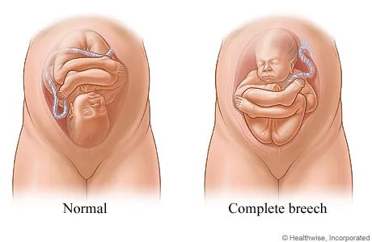
Clinicians now reserve the phrase "full term" for births between 39 and 40 weeks, with 37 to 38 weeks labeled "early term." Research shows that even that last week or two of gestation in the womb improves outcomes for babies. Scheduled deliveries should generally wait until at least 39 weeks unless there is a medical reason not to.
What Changes for the Mother
For many, this is the least comfortable trimester. The enlarged uterus crowds the lungs, stomach, and bladder, bringing shortness of breath, heartburn, back pain, hemorrhoids, and even more frequent urination. There also tends to be more pronounced swelling in the hands, feet, and ankles. Recommended weight gain for a person who started at a healthy weight is about 25 to 35 pounds across the whole pregnancy, most of it added on during the second and third trimesters (Institute of Medicine, 2009)Full ReferenceInstitute of Medicine & National Research Council. (2009). Weight gain during pregnancy: Reexamining the guidelines. National Academies Press..
Around weeks 34 to 36, the fetus often drops lower into the pelvis, a shift called lighteningLighteningThe dropping of the fetus lower into the pelvis in late pregnancy, which eases pressure on the lungs.View in glossary →, which eases the pressure on the lungs. Many people also begin to feel Braxton-Hicks contractionsBraxton-Hicks ContractionsIrregular, usually painless "practice" contractions in late pregnancy as the uterus rehearses for labor.View in glossary →, which are irregular, painless tightenings that feel like a belt cinching across the lower belly for a few seconds. They are the uterus rehearsing for labor, and they grow more frequent in the final weeks. Between the physical bulk, the disrupted sleep, and the sheer wait, most people reach a point where they feel thoroughly ready to be done.
The Couple's Experience
Anticipation runs high in the last weeks, mixed with an eagerness to have the physical symptoms of pregnancy behind them. It is common for fresh anxieties to surface too: about the pain of labor, the baby's health, and about whether one is ready to be a parent at all. Many couples channel that energy into preparation, the nesting impulse to ready a home, take a birth class, and preplan for the new arrival.
Partners tend to step up their involvement here. First-time partners often worry about how to be useful during the birth itself, while those who have been through it before worry more about the pain their partner will face (Poh et al., 2014)Full ReferencePoh, H. L., Koh, S. S., & He, H.-G. (2014). An integrative review of fathers' experiences during pregnancy and childbirth. International Nursing Review, 61(4), 543–554.. The practical work of getting ready — the appointments, the classes, the rearranging of a household — is itself a kind of bonding, and it builds a new foundation for the family.
Sexuality During Pregnancy
The question couples most often ask about sex during pregnancy is whether it is safe. For a normal, healthy pregnancy, the answer is yes, right up to the start of labor (Jones et al., 2011)Full ReferenceJones, C., Chan, C., & Farine, D. (2011). Sex in pregnancy. Canadian Medical Association Journal, 183(7), 815–818.. The fetus is sealed off and well protected inside the amniotic sac, and a thick plug of mucus seals the cervix against germs from the outside. Despite a widespread fear, there is no evidence that intercourse or orgasm brings on labor early in a low-risk pregnancy (Sayle et al., 2001; Schaffir, 2006)ReferencesSayle, A. E., Savitz, D. A., Thorpe, J. M., Jr., Hertz-Picciotto, I., & Wilcox, A. J. (2001). Sexual activity during late pregnancy and risk of preterm delivery. Obstetrics & Gynecology, 97(2), 283–289. | Schaffir, J. (2006). Sexual intercourse at term and onset of labor. Obstetrics & Gynecology, 107(6), 1310–1314.. The exceptions are specific: if there is a heightened risk of miscarriage or preterm labor, unexplained bleeding, or a problem with the placenta, a provider may advise holding off, since the mild uterine contractions that follow orgasm are best avoided in those situations.
Desire itself tends to move in a rough arc across the pregnancy. Interest often dips in the first trimester, when nausea and exhaustion are at their height, but then rebounds in the second trimester. During this time, the extra blood flow to the pelvis that comes with pregnancy can heighten sexual sensitivity and, for some people, makes arousal and orgasm easier than before. Desire then tends to taper off again in the third trimester, as the sheer size of the belly and general bodily discomfort become real obstacles to sex (Byrd et al., 1998; Hasani et al., 2019)ReferencesByrd, J. E., Hyde, J. S., DeLamater, J. D., & Plant, E. A. (1998). Sexuality during pregnancy and the year postpartum. Journal of Family Practice, 47(4), 305–308. | Hasani, M., Keramat, A., Maasoumi, R., Farjamfar, M., Yunesian, M., & Afshar, B. (2019). The frequency of vaginal intercourse during pregnancy: A systematic review and meta-analysis. International Journal of Women's Health and Reproduction Sciences, 7(1), 1–9.. None of this is universal and people can experience all sorts of ups-and-downs in sexual arousal during any part of pregnancy.
Comfort becomes the practical guide, especially later on. As the belly grows, some positions stop working for most couples. Partners tend to find that the side-lying (spooning) position easiest, as this rests the weight of the stomach on the bed and doesn't put strain on the hips (unlike the missionary, cowgirl, and doggy-style positions). It also helps to remember that penetrative sex is only one way to please a partner; manual and oral stimulation are great alternatives when intercourse gets awkward. Discomfort is worth taking seriously rather than enduring in silence. About 1 in 5 people experience pain during intercourse at some point during their pregnancy, and few mention it to a provider or even their partner (Rossi et al., 2019; Glowacka et al., 2014)ReferencesRossi, M. A., Mooney, K. M., Binik, Y. M., & Rosen, N. O. (2019). A descriptive and longitudinal analysis of pain during intercourse in pregnancy. Journal of Sexual Medicine, 16(12), 1966–1977. | Glowacka, M., Rosen, N., Chorney, J., Snelgrove-Clarke, E., & George, R. B. (2014). Prevalence and predictors of genito-pelvic pain in pregnancy and postpartum: The prospective impact of fear avoidance. Journal of Sexual Medicine, 11(12), 3021–3034..
Partners' feelings shape the picture too. Some find the pregnant body especially appealing. Others may feel hesitant having sex with a pregnant person, sometimes out of a misplaced worry about harming the baby. Many couples also describe a subtle psychological shift, a sense that a third person is now present. This can especially hit when fetal movement starts, which often picks up after sex and orgasm. It's worth stating again that sex is perfectly safe for the baby and the fetus doesn't experience any sharp jolts since it's cushioned by the amniotic fluid. If, during sex, a pregnant person experiences pain, bleeding, leaking fluid, or a heavy discharge that could be the mucus plug loosening, it's a good idea to contact a doctor to make sure sex is still safe to continue.
7.3 Labor and Birth
Birth is two things at once. It is a physiological event, a sequence of muscular and hormonal changes the body runs largely on its own, and it is one of the most psychologically charged experiences a person can have. The biology is remarkably consistent from one person to the next. The experience is not. How someone experiences labor has a lot to do with whether they feel informed, supported, and in control throughout the process.
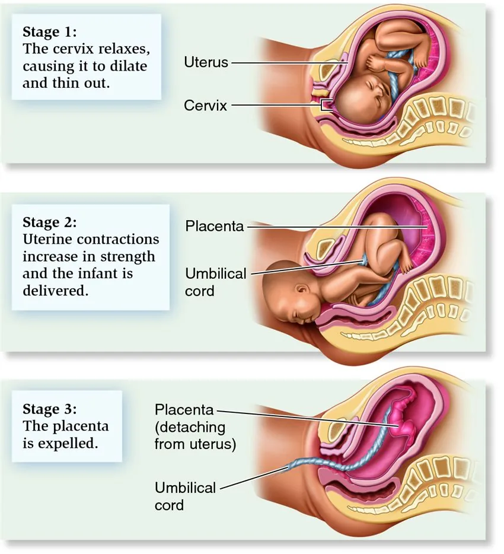
The Three Stages of Labor
For most of pregnancy the uterus stays quiet. What finally rouses it is a hormonal conversation between fetus and parent. In the weeks before birth, the fetus's adrenal glands release a surge of hormones that finishes maturing the lungs and signals to the parent that the fetus is ready for delivery. That signal prompts the parent's pituitary gland to release oxytocinOxytocinA pituitary hormone that triggers uterine contractions during labor and the milk let-down reflex during breastfeeding.View in glossary →, which triggers the uterus to make prostaglandinsProstaglandinsHormone-like compounds that make the uterine muscles contract during labor.View in glossary →. As discussed in the chapter on Fertility, prostaglandins make the uterine muscles contract. Each contraction presses the baby's head against the cervix, and that pressure sends nerve signals back to the brain telling it to release even more oxytocin. More oxytocin means stronger contractions, which means more pressure, which means more oxytocin. It's a positive feedback loopPositive Feedback LoopA self-amplifying process in which each step makes the next one bigger. In labor, contractions create pressure that releases more oxytocin, driving still stronger contractions.View in glossary →, a process that amplifies itself, each step making the next one bigger. The loop only has one off-switch: delivery.
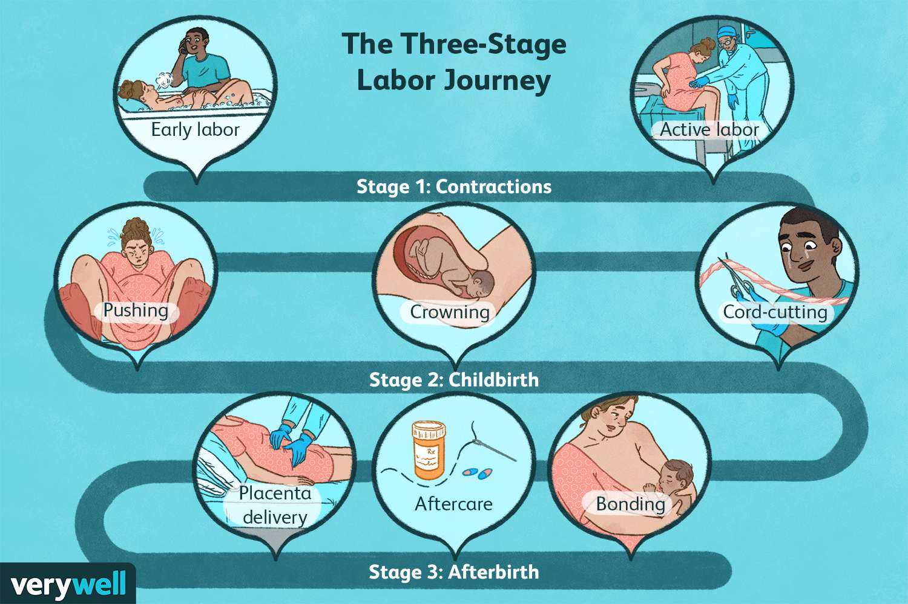
Hormones like oxytocin and prostaglandins start the first stage of laborFirst Stage of LaborThe longest stage, in which the cervix dilates (widens) to about 10 cm and effaces (thins) so the baby's head can pass.View in glossary →. This stage is the longest one and mostly concerns the dilation (widening) and effacement (thinning) of the cervix. The cervix has to go from nearly closed to about 10 centimeters (about 4 inches) dilated before the baby's head can pass. This is when some people experience their "water breaking," which is due to the mucus plug of the cervix opening. Although, many people never experience this during labor, as the baby's head is firmly pressed on the cervix, which keeps the amniotic fluid inside the womb. First-stage labor averages about 12 to 15 hours in a first pregnancy and around 8 hours in later ones. This stage builds across three phases, from mild, widely spaced contractions to a short, brutal stretch called transitionTransitionThe short, most intense phase at the end of the first stage, when contractions are strongest and closest together.View in glossary →, when contractions are strongest and most people report the hardest moments.
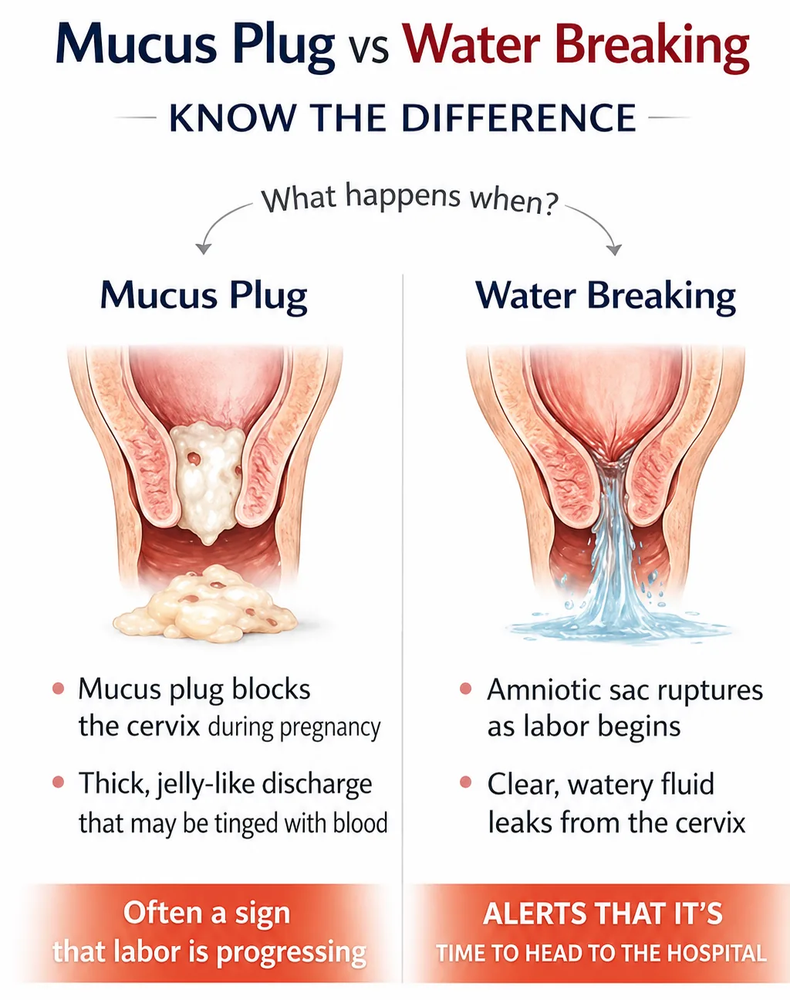
The second stage of laborSecond Stage of LaborThe delivery itself, beginning when the cervix is fully open and the baby descends through the birth canal until it is born.View in glossary → is the delivery itself. It begins when the cervix is fully open and the baby descends into the birth canal. It is far shorter than the first stage, lasting from a few minutes to a couple of hours. At this stage, each contraction brings an urge to push, and the baby advances a little further down the birth canal with each one.
When the top of the head appears at the vaginal opening, it's called crowningCrowningThe moment during the second stage when the top of the baby's head becomes visible at the vaginal opening.View in glossary →, and only a few more pushes are necessary to get the baby out completely.
The third stage of laborThird Stage of LaborThe delivery of the afterbirth, when a few final contractions detach and expel the placenta after the baby is born.View in glossary → involves releasing the afterbirth. A few final contractions detach the placenta from the uterine wall and expel it from the vagina. This usually occurs within an hour after birthing the baby. Often, the pregnant person barely notices it amid everything else happening. The placenta is then examined to confirm it came out whole, since a fragment left behind can cause medical issues later on.
Labor is driven by a positive feedback loop. Which sequence correctly describes it?
Medicalizing Birth
Over the last 100+ years, the birth process has become increasingly "medicalized," with most births now happening in hospitals and involving multiple medical procedures. Before this, most births occurred in the home with only family, or perhaps a midwife, present. Medical advances have made births far safer and more comfortable. Hospitals tend to offer pain management treatments, such as an epiduralEpiduralA regional anesthetic injected near the spine that numbs the lower body during labor. About 75% of people having a vaginal birth in the U.S. use one.View in glossary → or spinal tap during delivery. These are used by around 75% of people having a vaginal birth in the US (National Center for Health Statistics, 2026)Full ReferenceNational Center for Health Statistics. (2026). Epidural or spinal anesthesia use for singleton vaginal deliveries: United States, 2016–2024 (NCHS Data Brief No. 553). Centers for Disease Control and Prevention..
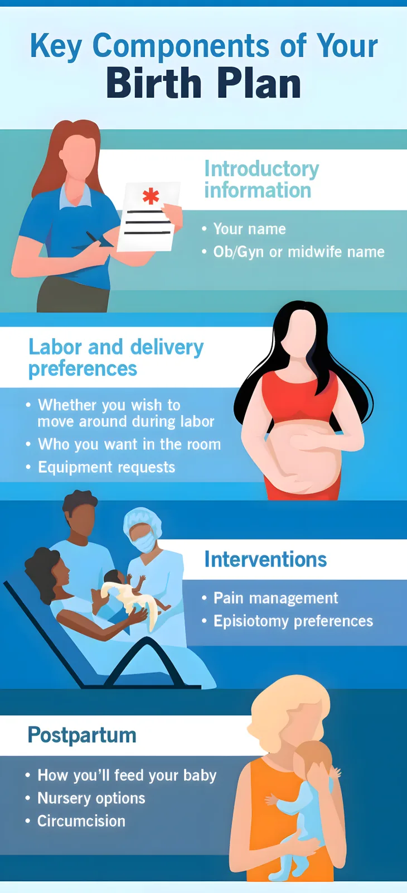
Cesarean Section
The cesarean sectionCesarean Section (C-section)Delivery of a baby through surgical incisions in the abdomen and uterus rather than through the birth canal.View in glossary →, also known as a C-section, is the delivery of a baby through incisions in the abdomen and uterus. C-sections are typically deemed necessary when a baby is pointed the wrong way during delivery, in a breech position (feet coming out first). However, people are increasingly choosing to have a C-section for non-medical reasons, such as to make birthing easier to schedule and manage. In the U.S., around 1 in 3 births are done through C-section, which is around 3 times higher than C-section rates outside of the U.S. (National Center for Health Statistics, 2025; World Health Organization, 2015)ReferencesNational Center for Health Statistics. (2025). U.S. births increase by 1% in 2024 [Press release]. Centers for Disease Control and Prevention. | World Health Organization. (2015). WHO statement on caesarean section rates (WHO/RHR/15.02).. When choosing a C-section for convenience, it's good to know some of the risks that come with it.

C-sections require a much longer recovery time than vaginal births, with full recovery typically taking several weeks. Having the uterus cut open can also cause scar tissue, which can lead to abnormalities for future pregnancies. Having a single C-section usually doesn't result in fertility issues, but having multiple can lead placenta tissue to grow into or through uterine scarring. If someone has had 3 or more C-sections, they have a 7% chance of having catastrophic bleeding during a future pregnancy (Silver et al., 2006)Full ReferenceSilver, R. M., Landon, M. B., Rouse, D. J., Leveno, K. J., Spong, C. Y., Thom, E. A., et al. (2006). Maternal morbidity associated with multiple repeat cesarean deliveries. Obstetrics & Gynecology, 107(6), 1226–1232.. Furthermore, having a C-section once may mean future births will also require a C-section. Old scarring from a previous C-section can tear during labor, which can make vaginal births dangerous. For people who have attempted vaginal birth after cesarean (known as VBACVBAC (Vaginal Birth After Cesarean)An attempt to deliver vaginally after a previous cesarean. Around 20–40% are unsuccessful and end in an emergency C-section.View in glossary →), around 20–40% are unsuccessful and have to have emergency C-sections (American College of Obstetricians and Gynecologists, 2019)Full ReferenceAmerican College of Obstetricians and Gynecologists. (2019). Vaginal birth after cesarean delivery (Practice Bulletin No. 205). Obstetrics & Gynecology, 133(2), e110–e127..
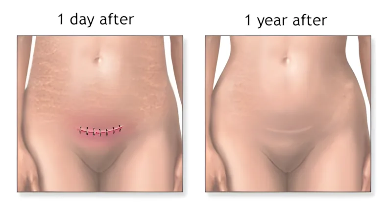
C-sections can also affect infants. When a baby exits the womb vaginally, all of the amniotic fluid in their lungs is squeezed out by the birthing process. On top of that, the labor process sets off a surge of stress hormones in the baby, which switches on channels in the lungs that actively pump out fluid (Jain & Eaton, 2006)Full ReferenceJain, L., & Eaton, D. C. (2006). Physiology of fetal lung fluid clearance and the effect of labor. Seminars in Perinatology, 30(1), 34–43.. A C-section negates all of this, making babies much more likely to have fluid stuck in their lungs long after they're born. This causes a higher rate of breathing difficulties called transient tachypnea of the newborn (Hansen et al., 2008)Full ReferenceHansen, A. K., Wisborg, K., Uldbjerg, N., & Henriksen, T. B. (2008). Risk of respiratory morbidity in term infants delivered by elective caesarean section: Cohort study. BMJ, 336(7635), 85–87.. For some, this effect isn't short-lived. Babies born via C-section are 20% more likely to have asthma later in life (Thavagnanam et al., 2008; Darabi et al., 2019)ReferencesThavagnanam, S., Fleming, J., Bromley, A., Shields, M. D., & Cardwell, C. R. (2008). A meta-analysis of the association between Caesarean section and childhood asthma. Clinical & Experimental Allergy, 38(4), 629–633. | Darabi, B., Rahmati, S., HafeziAhmadi, M. R., Badfar, G., & Azami, M. (2019). The association between caesarean section and childhood asthma: An updated systematic review and meta-analysis. Allergy, Asthma & Clinical Immunology, 15, 62.. There is also some evidence that C-section babies have weaker immune systems, which lead to more viral and bacterial infections during the first year of life (Cho & Norman, 2013; Kristensen & Henriksen, 2016)ReferencesCho, C. E., & Norman, M. (2013). Cesarean section and development of the immune system in the offspring. American Journal of Obstetrics & Gynecology, 208(4), 249–254. | Kristensen, K., & Henriksen, L. (2016). Cesarean section and disease associated with immune function. The Journal of Allergy and Clinical Immunology, 137(2), 587–590.. It's not yet understood why this happens, but it could have something to do with antibiotics that are typically prescribed to the parent before having a C-section.
Episiotomy
An episiotomyEpisiotomyA surgical cut to the perineum made to enlarge the vaginal opening during birth. Once routine, it is no longer recommended as a default.View in glossary → is a small surgical cut to the perineumPerineumThe area of tissue between the vagina and the anus.View in glossary →, the tissue between the vagina and the anus, made to enlarge the vaginal opening as the baby crowns. The vagina often naturally tears during delivery, especially for first pregnancies. For most of the 20th century, doctors performed episiotomies because they assumed a straight, controlled incision would heal better than a natural tear.

Decades of evidence has since overturned that theory. A systematic review of episiotomy studies found that the procedure delivered none of its promised benefits: it did not reduce severe tearing, pain, or later pelvic problems, and women who received it generally fared worse than those who didn't (Hartmann et al., 2005; Jiang et al., 2017)ReferencesHartmann, K., Viswanathan, M., Palmieri, R., Gartlehner, G., Thorp, J., Jr., & Lohr, K. N. (2005). Outcomes of routine episiotomy: A systematic review. JAMA, 293(17), 2141–2148. | Jiang, H., Qian, X., Carroli, G., & Garner, P. (2017). Selective versus routine use of episiotomy for vaginal birth. Cochrane Database of Systematic Reviews, 2017(2), CD000081.. The reason a routine cut backfires is mechanical: a midline incision gives a tear a head start, so once the tissue begins to give way it can run on into the anal muscles, producing problems like infection and incontinence (uncontrollable pooping). Reviews have also found that episiotomies are done more in low-income areas with heavy patient loads, perhaps because doctors found they could shave 10–20 minutes off of a delivery by making this extra incision (Webb & Culhane, 2002b)Full ReferenceWebb, D. A., & Culhane, J. (2002b). Time of day variation in rates of obstetric intervention to assist in vaginal delivery. Journal of Epidemiology and Community Health, 56(8), 577–578..
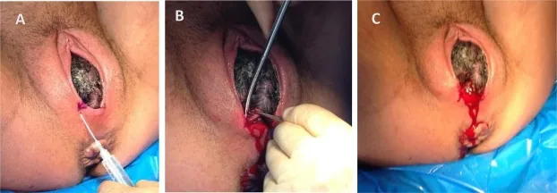
When a baby needs help through the last stretch of the birth canal, a clinician may use forcepsForcepsSmooth, tong-like instruments that cradle the baby's head to help guide it through the birth canal during an assisted delivery.View in glossary →, which cradle the head like a pair of smooth tongs, or a vacuum extractorVacuum ExtractorA device that applies gentle suction to the baby's scalp to help guide it out during an assisted vaginal delivery.View in glossary →, which applies gentle suction to the scalp. These assisted vaginal deliveries are now uncommon, used in only a small share of births, partly because C-sections have taken their place for difficult deliveries.
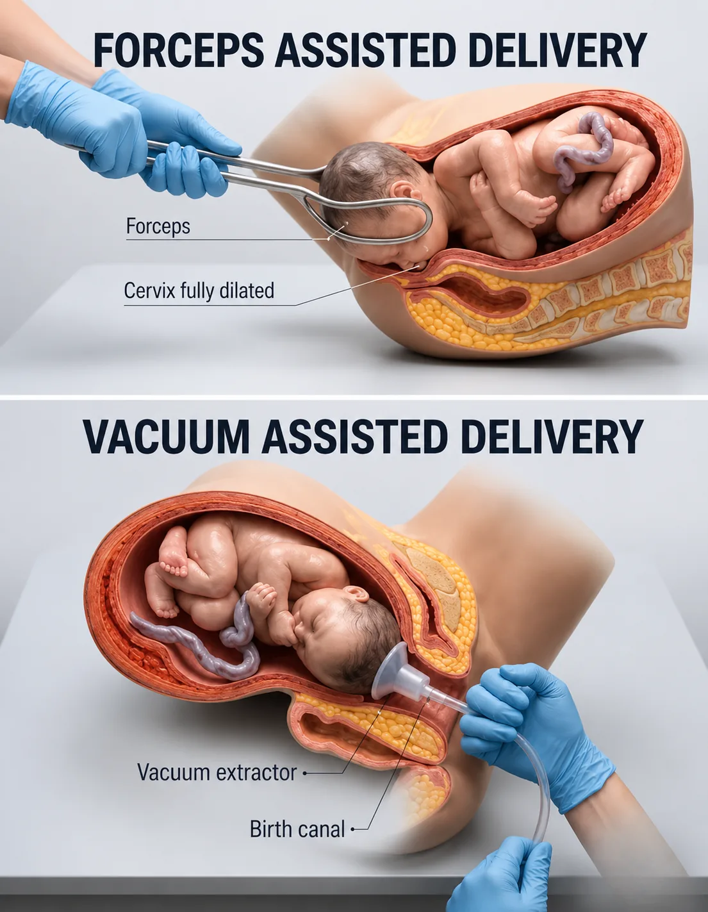
For most of the 20th century, doctors routinely performed episiotomies, assuming a clean cut heals better than a natural tear. What did decades of later evidence show?
7.4 The Postpartum Period
While the pregnancy and birth tend to get all the attention, what comes after is just as crucial. The weeks after delivery, often called the fourth trimesterFourth TrimesterThe first weeks after delivery, a demanding recovery period for both the new parent and the newborn.View in glossary →, require a new parent to recover from a major physical event, learn to keep a newborn alive, and reorganize their sense of self and their closest relationship. Not to mention this is a time when that person is likely getting very little sleep. The body's recovery is the most visible piece, but the psychological recovery is often much more difficult.
Postpartum Recovery
The body has just completed something close to an athletic feat, and it shows. For several days to a few weeks, the uterus sheds its pregnancy lining as a bloody discharge called lochiaLochiaThe bloody vaginal discharge that occurs for days to weeks after birth as the uterus sheds its pregnancy lining.View in glossary →. The uterus also slowly contracts back toward its former size. This process is helped along by breastfeeding, which releases oxytocin that aids in recovery. For women who choose not to breastfeed, they may be asked to at least breast pump to obtain these benefits. Tears and other physical damage to the vagina also take time to heal, making sitting, walking, and using the bathroom uncomfortable for a while.
During pregnancy, the placenta pumps out high levels of estrogen and progesterone. After delivery, these hormones crash within days. That sudden drop causes many psychological effects, such as mood swings, irritability, and sometimes depression. Recovery post-pregnancy should be measured in months, not in the 2 weeks that a short maternity leave often allows for. The idea that people should quickly "bounce back" after a pregnancy only adds to the sense of guilt and shame that many parents experience when they aren't faring well months after giving birth, even though that's quite normal.
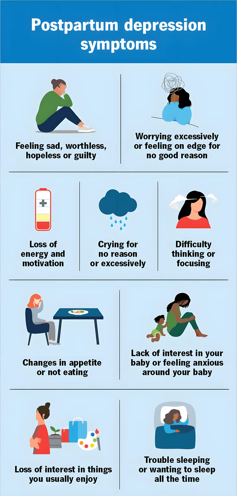
At the mild end of the spectrum are the baby bluesBaby BluesCommon, mild, short-lived mood swings, tearfulness, and feelings of being overwhelmed in roughly the first two weeks after birth, affecting about 80% of new mothers.View in glossary →: mood swings, tearfulness, irritability, and a sense of being overwhelmed. This usually starts a few days after giving birth and peaks around the end of the first week. For many people, this difficult period fades by about 2 weeks. These symptoms are so common as to be the norm, affecting around 80% of new mothers (American Psychiatric Association, 2022)Full ReferenceAmerican Psychiatric Association. (2022). What is peripartum depression (formerly postpartum)? <https://www.psychiatry.org/patients-families/peripartum-depression/what-is-peripartum-depression>. This is a time when all new parents need extra support from friends, families, and cultural institutions.
If this down period doesn't lift, it can sometimes settle into postpartum depression (PPD)Postpartum Depression (PPD)A more intense and longer-lasting depression after birth, marked by persistent sadness, anxiety, and trouble sleeping; affects about 1 in 8 new mothers.View in glossary →, which is more intense and longer lasting. This disorder is marked by persistent sadness, hopelessness, anxiety, and an inability to sleep even when the baby sleeps. It can sometimes include a frightening sense of being unable to care for or feel connected to the baby. PPD affects about 1 in 8 new mothers, with higher rates among women of color, who tend to have less access to postnatal care (American Psychiatric Association, 2022)Full ReferenceAmerican Psychiatric Association. (2022). What is peripartum depression (formerly postpartum)? <https://www.psychiatry.org/patients-families/peripartum-depression/what-is-peripartum-depression>.
The rarest and most severe form is postpartum psychosisPostpartum PsychosisA rare (about 1 in 1,000 births) psychiatric emergency with confusion, agitation, delusions, or hallucinations, often within days of birth and strongly linked to bipolar disorder.View in glossary →, which affects about 1 in 1,000 births. It comes on fast, often within days of giving birth, bringing about confusion, agitation, delusions, or hallucinations. It is a true psychiatric emergency that needs immediate care. It is strongly linked to bipolar disorder, and while the risk of harm to parent or baby is real when it goes untreated, people with this disorder most often respond well to treatment (American Psychiatric Association, 2022)Full ReferenceAmerican Psychiatric Association. (2022). What is peripartum depression (formerly postpartum)? <https://www.psychiatry.org/patients-families/peripartum-depression/what-is-peripartum-depression>.
Mood disorders after a birth are not only the birthing parent's experience. Roughly 8 to 10 percent of fathers and partners develop depression during the same period, a figure that rises when the other parent is depressed too (Paulson & Bazemore, 2010)Full ReferencePaulson, J. F., & Bazemore, S. D. (2010). Prenatal and postpartum depression in fathers and its association with maternal depression: A meta-analysis. JAMA, 303(19), 1961–1969.. Partner depression is easy to miss precisely because everyone's attention is on the mother and baby, yet it shapes the whole family's wellbeing.
The Bonding Myth
Few ideas about new parenthood have caused as much needless guilt as the bondingBondingThe deep, lasting attachment between parent and child. Contrary to the "golden hour" myth, it is built gradually over months of care rather than fixed in a single window after birth.View in glossary → myth. In the 1970s, pediatricians Marshall Klaus and John Kennell proposed that the hours right after birth were a "sensitive period," a brief window in which mother and infant had to make skin-to-skin contact in order to bond properly, much like the imprinting seen in some animals (Klaus & Kennell, 1976)Full ReferenceKlaus, M. H., & Kennell, J. H. (1976). Maternal-infant bonding. C. V. Mosby.. The idea spread fast and reshaped hospital routines.
It also turned out to be wrong. Later research found little evidence for a make-or-break bonding window (Eyer, 1992)Full ReferenceEyer, D. E. (1992). Mother-infant bonding: A scientific fiction. Yale University Press.. The clearest disproof is ordinary experience. Parents who deliver by cesarean under general anesthesia, parents whose newborns go straight to intensive care, and adoptive parents who meet their children days or years later all form deep and lasting bonds. If a closing window existed, none of that would be possible.
This myth subtly puts blame on parents who don't instantly feel bonded with their newborn. A bond between parent and child is not sparked during one golden hour. It is built over months of feeding, soothing, and responding to an infant. It is a slow process rather than a single moment. However, skin-to-skin contact right after birth still has its advantages. Studies show it helps keep the newborn warm, steadies their heart rate, and gets breastfeeding started sooner, which is why hospitals still encourage it. The correction is only to the stakes: early contact is a good beginning, not a make-or-break moment for bonding.
What is the best-supported, current understanding of parent–infant bonding?
Sex After a Baby
A baby changes a couple's sex life, often more than new parents expect. Clinicians generally advise waiting until around the six-week checkup before resuming penetrative sex, to let any tearing heal and lower the risk of infection. Although, other forms of intimacy, such as oral or manual sex, present no harm to new moms. When penetrative sex does resume, it can be uncomfortable or painful at first, whether from healing perineal tissue, a cesarean incision, or the vaginal dryness that breastfeeding and drops in estrogen can produce.
Studies of the transition to parenthood find that the great majority of new parents, more than 90 percent, report sexual concerns they did not have before. This often includes reduced desire, mismatched desire between partners, too little time or energy, and changes in body image (Schlagintweit et al., 2016)Full ReferenceSchlagintweit, H. E., Bailey, K., & Rosen, N. O. (2016). A new baby in the bedroom: Frequency and severity of postpartum sexual concerns and their associations with relationship satisfaction in new parent couples. Journal of Sexual Medicine, 13(10), 1455–1465.. Sexual frequency declines through pregnancy and into the early postpartum months and tends to stay below pre-pregnancy levels for at least the first year (Jawed-Wessel & Sevick, 2017)Full ReferenceJawed-Wessel, S., & Sevick, E. (2017). The impact of pregnancy and childbirth on sexual behaviors: A systematic review. Journal of Sex Research, 54(4–5), 411–423.. Although, sexual frequency tends to slowly recover after that.
This burden is usually uneven. The birthing parent typically experiences the larger drop in desire, due to their hormonal changes, physical recovery, fatigue, and the mental load of caring for a new baby. For many couples, sexual frequency and satisfaction begin recovering once the baby is a few months old. The couples who come through this best are those who talk openly about these changes, keep their expectations realistic, and treat the dip as a temporary blip in their normal sex lives.
Feeding the Baby
Feeding is where much of the postpartum pressure concentrates. While the biology is relatively simple, it can be a thorny issue in many families. It doesn't help that modern culture places a lot of loaded feelings and assumptions onto breastfeeding, so it can often feel like you're not doing it "right" no matter what you do.
Two pituitary hormones run lactation: prolactinProlactinA pituitary hormone that signals the breasts to produce milk.View in glossary → tells the breasts to make milk, and oxytocin triggers the let-down reflexLet-Down ReflexThe oxytocin-triggered release of milk from the breast. It can become a conditioned response, set off by a baby's cry or the sight of the baby.View in glossary → that releases it. The system is demand-driven. The baby's suckling sends a nerve signal to the brain that calls for more oxytocin and, over time, more milk. For the first day or two after giving birth, the mother releases colostrum, a thick, antibody-rich secretion. This gives the newborn an early dose of immune protection before the regular milk comes in.
Major health bodies, including the American Academy of Pediatrics and the World Health Organization, recommend exclusive breastfeeding for about the first six months, with continued breastfeeding alongside solid foods to age two or beyond (Meek et al., 2022)Full ReferenceAmerican Academy of Pediatrics, Meek, J. Y., Noble, L., & Section on Breastfeeding. (2022). Policy statement: Breastfeeding and the use of human milk. Pediatrics, 150(1), e2022057988.. The benefits are real, but newborns placed on formula instead of breast milk aren't at a major disadvantage. Differences between newborns raised on breastmilk vs formula tend to be short-term and are mostly related to the immune system. Breastfed infants tend to have fewer ear, respiratory, and gastrointestinal infections. Breastfeeding parents also see benefits, with reduced rates of breast and ovarian cancer and type 2 diabetes. The longer-term claims about IQ, obesity, and chronic disease are far murkier, because breastfeeding is more common in families with higher levels of education and income. When researchers compare siblings within the same family — one breastfed and one not — these supposed long-term advantages of breastfeeding shrink or vanish completely (Colen & Ramey, 2014)Full ReferenceColen, C. G., & Ramey, D. M. (2014). Is breast truly best? Estimating the effects of breastfeeding on long-term child health and wellbeing in the United States using sibling comparisons. Social Science & Medicine, 109, 55–65.. The fair summary is that breastfeeding carries clear benefits, but that the gap between breastfed and formula-fed children is often short-lived and easily overshadowed by other factors.
In the United States, more than 80% of parents start out breastfeeding, but only about 25% are still breastfeeding exclusively at six months. The most common reasons for stopping are practical: trouble with latching or milk supply, pain, and the nearly impossible prospect of feeding an infant while working a full-time job. Treating breastfeeding as a test of maternal devotion adds guilt into the mix. The AAP itself, in its 2022 update, paired its recommendation for breastfeeding with a call for nonjudgmental support, acknowledging that exclusive breastfeeding is not possible for every family and that babies thrive on breast milk, formula, or a combination. A well-fed baby and a supportive community are the goals that matter.
A new parent is wracked with guilt because they cannot breastfeed exclusively. What does the best current evidence actually say about breast milk versus formula?
7.5 When Pregnancy Is Complicated
Most pregnancies are uneventful and end with a healthy baby. A meaningful minority, though, run into complications that range from the merely worrying to the life-threatening. While some of these complications are unavoidable, many can be deterred by knowing the danger signs and catching things early.
Miscarriage
MiscarriageMiscarriageThe loss of a pregnancy before the fetus can survive on its own. It is the most common complication of pregnancy and is usually caused by chromosomal errors.View in glossary →, the loss of a pregnancy before the fetus can survive on its own, is the most common complication of pregnancy. About 1 in 10 recognized pregnancies ends in miscarriage (American College of Obstetricians and Gynecologists, 2018)Full ReferenceAmerican College of Obstetricians and Gynecologists. (2018). Early pregnancy loss (Practice Bulletin No. 200). Obstetrics & Gynecology, 132(5), e197–e207.. The true rate of miscarriage is undoubtedly higher, as a large share of losses happen so early that they pass unnoticed as a late or heavy period. When researchers track pregnancies from the earliest detectable signs, roughly a third of all conceptions do not survive (Wilcox et al., 1988)Full ReferenceWilcox, A. J., Weinberg, C. R., O'Connor, J. F., Baird, D. D., Schlatterer, J. P., Canfield, R. E., Armstrong, E. G., & Nisula, B. C. (1988). Incidence of early loss of pregnancy. New England Journal of Medicine, 319(4), 189–194.. The great majority of miscarriages, around 80 percent, occur in the first trimester.
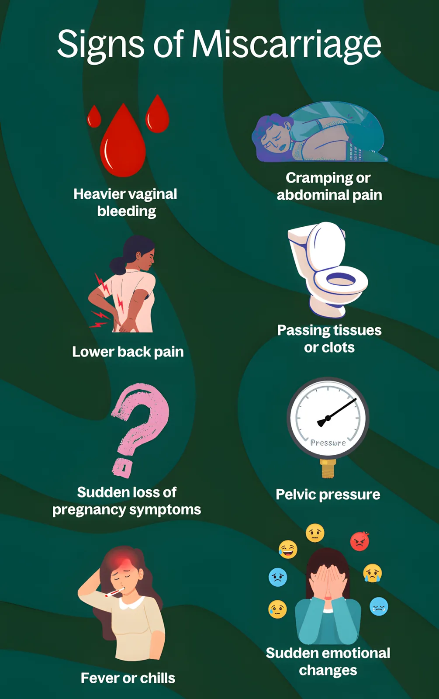
Most early losses are caused by chromosomal errors in the embryo. In most cases, there is nothing the pregnant person did to harm the embryo. It simply wasn't viable (able to develop) from the start. Many parents blame themselves for a miscarriage, believing that if they had eaten better, exercised more, or managed their stress better, it wouldn't have happened. But the vast majority of miscarriages aren't due to anything the parent does or doesn't do. The pregnancy simply wasn't meant to be.
The other heavy part is grief, which often goes unacknowledged. Because early pregnancy is frequently kept private, a miscarriage can be an invisible loss, mourned without the rituals and support that follow other deaths. A substantial share of people who miscarry experience anxiety, depression, or grief afterward, sometimes for months (Lok & Neugebauer, 2007)Full ReferenceLok, I. H., & Neugebauer, R. (2007). Psychological morbidity following miscarriage. Best Practice & Research Clinical Obstetrics & Gynaecology, 21(2), 229–247.. Partners often grieve too, frequently in secret and with even less acknowledgment and support. Miscarriage should be recognized as a real loss. The worst advice someone can receive after a miscarriage is the trite, "well, just try again." Time is needed for people to grieve and perhaps more time is needed for them to decide if another attempt is right for them.
Ectopic Pregnancy
An ectopic pregnancyEctopic PregnancyA pregnancy that implants somewhere other than the uterine lining, almost always in a fallopian tube. It cannot produce a baby and is dangerous to the pregnant person.View in glossary → is one that implants somewhere other than the lining of the uterus, almost always in a fallopian tube. It's like a seed taking root in the wrong soil. The fallopian tube cannot nourish a growing embryo and cannot safely stretch to hold it. Ectopic pregnancies occur in roughly 1–2% of pregnancies, often when scarring has blocked the tube and trapped the fertilized egg on its way to the uterus. This can be a result of undiagnosed STIs, such as chlamydia, which can create scar tissue over time.
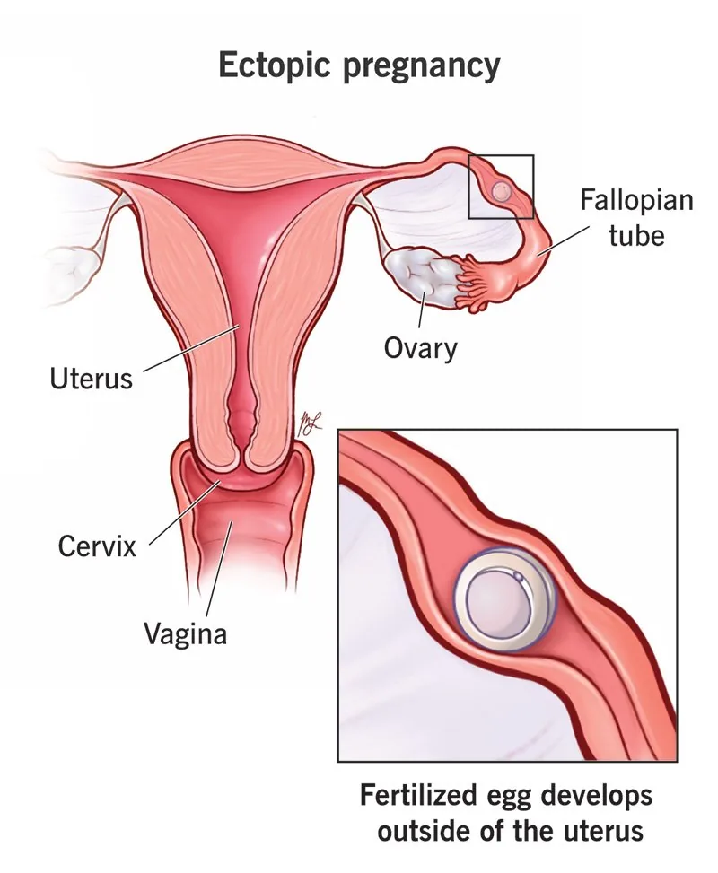
An ectopic pregnancy cannot produce a baby, and it is dangerous to the pregnant person. As the embryo grows, it can rupture the tube and cause severe internal bleeding. Ectopic pregnancy is one of the leading causes of maternal death in the first trimester. The warning signs are sharp or one-sided abdominal pain, vaginal bleeding, and sometimes shoulder pain. If someone shows these signs, especially for more than 1 day, they should seek emergency care. Caught early, an ectopic pregnancy can be ended with medication or surgery before it ruptures.
Preterm Birth and Low Birth Weight
A birth before 37 completed weeks of gestation is pretermPreterm BirthA birth before 37 completed weeks of gestation; the leading cause of newborn death and long-term disability.View in glossary →, and it is the leading cause of newborn death and long-term disability. About 10% of U.S. births are preterm, a rate strikingly high for a wealthy country (National Center for Health Statistics, 2025)Full ReferenceNational Center for Health Statistics. (2025). U.S. births increase by 1% in 2024 [Press release]. Centers for Disease Control and Prevention.. Closely related is low birth weightLow Birth WeightA birth weight below the normal range, closely tied to preterm birth since babies gain most of their weight in the final weeks.View in glossary →, since babies gain most of their weight in the final weeks.
The earlier a baby arrives, the steeper the risks, because organs finish developing late in the pregnancy. The lungs in particular are among the last systems to mature, which is why premature infants so often struggle to breathe. Modern neonatal intensive care has dramatically increased survival rates for preterm babies. Many premature infants not only live but show no long-term harms from being born early. However, many who survive later display lasting respiratory, cognitive, and developmental problems. The causes of preterm birth range widely, including infection, high blood pressure, smoking, and chronic stress; though, in many cases, no single cause is ever identified.
Preterm birth is also one of the clearest examples of how unevenly pregnancy risk is distributed. In the United States, Black mothers have a preterm birth rate around 15%, which is 50% more than the national average (March of Dimes, 2024)Full ReferenceMarch of Dimes. (2024). 2024 March of Dimes report card. <https://www.marchofdimes.org/report-card>. This gap is due largely to higher levels of stress, lower access to care, and the cumulative toll of racism in the U.S.
A Crisis in Maternal Mortality
For all its medical sophistication, the United States has a maternal mortality problem that sets it apart from other wealthy nations. A maternal deathMaternal DeathA death from causes related to pregnancy, occurring during pregnancy or shortly after it.View in glossary → is a death from causes related to pregnancy, occurring during pregnancy or shortly after it. The U.S. rate is about 19 deaths per 100,000 live births, which is several times higher than rates of comparable countries (Hoyert, 2025)Full ReferenceHoyert, D. L. (2025). Maternal mortality rates in the United States, 2023. NCHS Health E-Stats. National Center for Health Statistics..
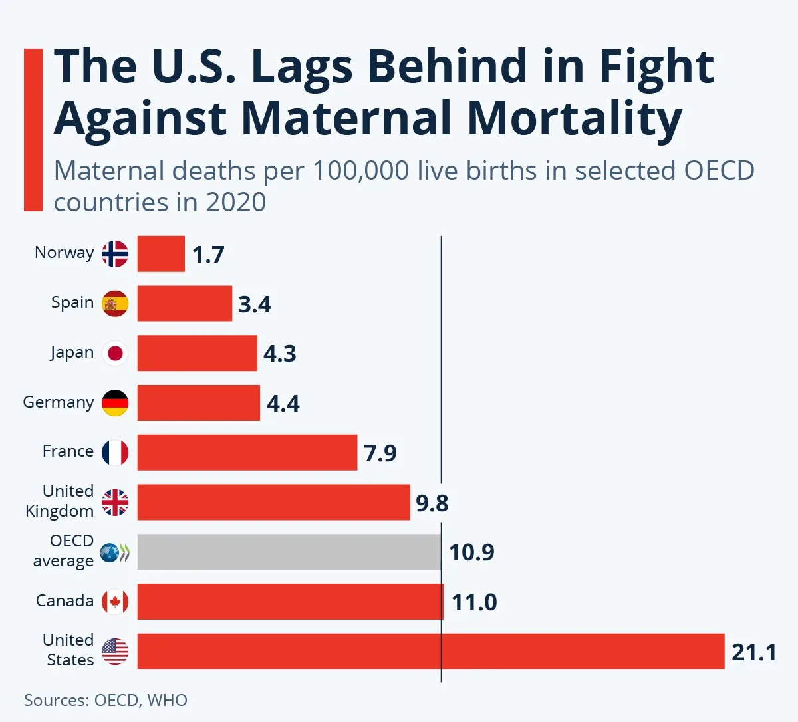
These deaths are not evenly shared. Black women in the United States die of pregnancy-related causes at roughly 3 times the rate of white women (Hoyert, 2025; KFF, 2025)ReferencesHoyert, D. L. (2025). Maternal mortality rates in the United States, 2023. NCHS Health E-Stats. National Center for Health Statistics. | KFF. (2025). Racial disparities in maternal and infant health: Current status and key issues. <https://www.kff.org/racial-equity-and-health-policy/issue-brief/racial-disparities-in-maternal-and-infant-health/>. This gap doesn't close even when comparing Black and White women who have the same income or level of education. The wealthiest Black women face a higher risk of maternal death than the poorest white women. It's a stark reminder that the U.S. health system treats mothers very differently based on their skin color. More than 80% of these deaths are considered preventable (KFF, 2025)Full ReferenceKFF. (2025). Racial disparities in maternal and infant health: Current status and key issues. <https://www.kff.org/racial-equity-and-health-policy/issue-brief/racial-disparities-in-maternal-and-infant-health/>. They come from serious but normally manageable emergencies, like hemorrhage, blood clots, infection, and the hypertensive disorders. Most of these are survivable if caught and treated in time. The sad fact is that Black women are less likely to be listened to and cared for when they raise serious medical concerns (CDC, 2023)Full ReferenceCenters for Disease Control and Prevention. (2023). Mistreatment during maternity care. <https://www.cdc.gov/vitalsigns/respectful-maternity-care/index.html>.
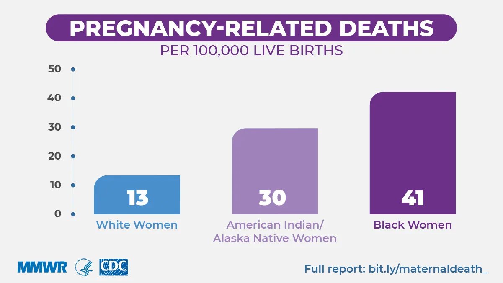
When deaths are counted across the full year after pregnancy, more than half occur in the weeks and months that follow the birth (KFF, 2025)Full ReferenceKFF. (2025). Racial disparities in maternal and infant health: Current status and key issues. <https://www.kff.org/racial-equity-and-health-policy/issue-brief/racial-disparities-in-maternal-and-infant-health/>. The postpartum period shouldn't be treated as an afterthought. It's a time when new parents can be the most medically and psychologically vulnerable. Wealthy nations treat this vulnerable window as a public health priority by providing universal healthcare coverage, extensive parental leave time, and low or no-cost childcare (Commonwealth Fund, 2024)Full ReferenceCommonwealth Fund, The. (2024). U.S. maternal mortality crisis comparison. https://doi.org/10.26099/cthn-st75. Many countries deploy home-visiting midwives or nurses to monitor physical healing and screen for postpartum depression directly in the home (Wüst, 2022)Full ReferenceWüst, M. (2022). Universal early-life health policies in the Nordic countries. Journal of Economic Perspectives, 36(2), 175–198.. These state-sponsored programs come at no cost to new parents, with community care for new families being the expected norm. Studies show this leads to far lower levels of maternal death, as well as healthier and happier babies and families (Bütikofer et al., 2019; Khan, 2020)ReferencesBütikofer, A., Løken, K. V., & Salvanes, K. G. (2019). Infant health care and long-term outcomes. The Review of Economics and Statistics, 101(2), 341–354. | Khan, M. S. (2020). Paid family leave and children health outcomes in OECD countries. Children and Youth Services Review, 116, 105259.
Which statement about maternal mortality in the United States is best supported by the evidence?
Study Guide
After reading this chapter, you should be able to answer each of the questions below. Use your own words where possible, and support your answers with examples or evidence from the text.
7.1 Conception
- Why is the "race to the egg" a misleading metaphor? Explain the roles of filtering, capacitation, and the three guidance systems (rheotaxis, thermotaxis, chemotaxis).
- What is the "zinc spark," and how does it prevent polyspermy? Why does the "one sperm, one egg" math matter?
- What hormone do pregnancy tests detect, and why can testing too early produce a false negative? What two habits reduce that risk?
7.2 Pregnancy and Prenatal Development
- Why is a pregnancy dated from the last menstrual period (LMP) rather than from conception? If someone is "4 weeks pregnant," about how long has the embryo actually been developing?
- Why should anyone who could become pregnant take folic acid daily, even before trying to conceive? Why is the advice to "eat for two" misleading?
- Distinguish an embryo from a fetus, and explain why the first trimester is the most vulnerable period for teratogen exposure.
- Name the three structures of the fetal support system and describe what each one does.
- What is viability, where does its edge currently sit, and why does each additional week in the womb matter so much?
7.3 Labor and Birth
- Outline the three stages of labor, and explain the positive feedback loop (involving oxytocin) that drives contractions.
- Summarize the risks a cesarean section can pose for the parent and for the infant.
- Why is routine episiotomy no longer recommended? What does the evidence show?
7.4 The Postpartum Period
- Compare baby blues, postpartum depression, and postpartum psychosis in terms of severity, frequency, and timing.
- Explain the "bonding myth." What does the evidence actually show about how parent–infant bonds form, and what is skin-to-skin contact still good for?
- What does the best current evidence say about breast milk versus formula, and why do many long-term advantages shrink in sibling comparisons?
7.5 When Pregnancy Is Complicated
- Why do most miscarriages happen, and why is parental self-blame usually misplaced?
- What is an ectopic pregnancy, why is it dangerous, and what are its warning signs?
- Describe the U.S. maternal mortality crisis and its racial disparities. What do many other wealthy nations do differently in the postpartum period?
Key Terms
- Acrosome Cap
- The enzyme-filled cap on the head of a sperm; it bursts to dissolve a path through the egg's outer coating.
- Allonursing
- The breastfeeding of an infant by someone other than its own parent, such as a wet nurse.
- Amniotic Fluid
- The warm liquid inside the amniotic sac that holds a steady temperature and cushions the fetus from outside jolts.
- Amniotic Sac
- The fluid-filled membrane surrounding the fetus that cushions it and keeps its temperature stable.
- Baby Blues
- Common, mild, short-lived mood swings, tearfulness, and feelings of being overwhelmed in roughly the first two weeks after birth, affecting about 80% of new mothers.
- Blastocyst
- The hollow ball of cells that forms a few days after fertilization; its outer layer becomes the placenta and its inner cluster becomes the embryo.
- Bonding
- The deep, lasting attachment between parent and child. Contrary to the "golden hour" myth, it is built gradually over months of care rather than fixed in a single window after birth.
- Braxton-Hicks Contractions
- Irregular, usually painless "practice" contractions in late pregnancy as the uterus rehearses for labor.
- Breech
- A fetal position that is bottom-first or feet-first rather than head-down at term; it often leads to a cesarean delivery.
- Capacitation
- The final maturation step sperm undergo inside the female reproductive tract that makes them capable of fertilizing an egg.
- Cephalic Presentation
- The head-down position most fetuses settle into before birth, the safest orientation for a vaginal delivery.
- Cesarean Section (C-section)
- Delivery of a baby through surgical incisions in the abdomen and uterus rather than through the birth canal.
- Chemotaxis
- Movement directed by chemical signals; sperm detect molecules released near the egg and home in on their source.
- Colostrum
- The thick, antibody-rich early milk produced in late pregnancy and the first days after birth, giving the newborn an early dose of immune protection.
- Couvade (Sympathetic Pregnancy)
- The development of pregnancy-like symptoms — nausea, cravings, weight gain — in an expectant partner, accompanied by real hormonal shifts.
- Crowning
- The moment during the second stage of labor when the top of the baby's head becomes visible at the vaginal opening.
- Cryptic Female Choice
- The proposed ability of the female reproductive tract to favor some sperm over others after mating. It is "cryptic" because the exact mechanisms are still unknown.
- Ectopic Pregnancy
- A pregnancy that implants somewhere other than the uterine lining, almost always in a fallopian tube. It cannot produce a baby and is dangerous to the pregnant person.
- Edema
- Mild swelling of the hands and feet caused by the increased blood and fluid volume of pregnancy.
- Embryo
- The developing organism from implantation through about the 12th week, while the basic organs and body structures are first being laid down.
- Epidural
- A regional anesthetic injected near the spine that numbs the lower body during labor. About 75% of people having a vaginal birth in the U.S. use one.
- Episiotomy
- A surgical cut to the perineum made to enlarge the vaginal opening during birth. Once routine, it is no longer recommended as a default.
- External Cephalic Version
- A procedure in which a provider presses on the abdomen to try to turn a breech fetus into a head-down position.
- False Negative
- A test result that says a person is not pregnant when they actually are — common when a test is taken too early, before hCG has built up.
- Fetal Alcohol Spectrum Disorders (FASD)
- An umbrella term for the range of lifelong physical, cognitive, and behavioral effects caused by prenatal alcohol exposure.
- Fetal Alcohol Syndrome
- The most severe form of FASD, marked by distinctive facial features, growth problems, and intellectual disability.
- Fetus
- The developing organism from about the 12th week until birth, once all major organ groups are present (though not yet fully developed).
- First Stage of Labor
- The longest stage, in which the cervix dilates (widens) to about 10 cm and effaces (thins) so the baby's head can pass.
- Folic Acid
- A B vitamin essential for forming the neural tube. Adequate intake before and in early pregnancy cuts the risk of neural tube defects such as spina bifida by at least half.
- Forceps
- Smooth, tong-like instruments that cradle the baby's head to help guide it through the birth canal during an assisted delivery.
- Fourth Trimester
- The first weeks after delivery, a demanding recovery period for both the new parent and the newborn.
- Geophagia
- The specific practice of eating earth, soil, or clay; a common form of pica often linked to iron deficiency.
- Human Chorionic Gonadotropin (hCG)
- The hormone produced by the developing placenta after implantation. Because only a pregnancy makes it, detecting hCG is a reliable sign of pregnancy.
- Hyperemesis Gravidarum
- A severe form of pregnancy nausea with relentless vomiting and weight loss that can require hospital treatment.
- Implantation
- The embedding of the blastocyst into the uterine lining about a week after fertilization; it marks the start of hCG release.
- Last Menstrual Period (LMP)
- The first day of the most recent period, used as the standard starting point for dating a pregnancy because it is easier to identify than the day of conception.
- Let-Down Reflex
- The oxytocin-triggered release of milk from the breast. It can become a conditioned response, set off by a baby's cry or the sight of the baby.
- Lightening
- The dropping of the fetus lower into the pelvis in late pregnancy, which eases pressure on the lungs.
- Lochia
- The bloody vaginal discharge that occurs for days to weeks after birth as the uterus sheds its pregnancy lining.
- Low Birth Weight
- A birth weight below the normal range, closely tied to preterm birth since babies gain most of their weight in the final weeks.
- Maternal Death
- A death from causes related to pregnancy, occurring during pregnancy or shortly after it.
- Miscarriage
- The loss of a pregnancy before the fetus can survive on its own. It is the most common complication of pregnancy and is usually caused by chromosomal errors.
- Morning Sickness
- The nausea and queasiness of early pregnancy. Despite the name, it can strike at any hour and usually fades by the second trimester.
- Oxytocin
- A pituitary hormone that triggers uterine contractions during labor and the milk let-down reflex during breastfeeding.
- Perineum
- The area of tissue between the vagina and the anus.
- Pica
- A craving for and eating of non-food substances such as clay, dirt, or chalk.
- Placenta
- The organ at the uterine wall where the parent's and fetus's blood run close enough to exchange oxygen, nutrients, and waste without mixing; it also produces pregnancy hormones.
- Polyspermy
- Fertilization of a single egg by more than one sperm. It produces too many chromosomes and is not viable, so the egg blocks it immediately.
- Positive Feedback Loop
- A self-amplifying process in which each step makes the next one bigger. In labor, contractions create pressure that releases more oxytocin, driving still stronger contractions.
- Postpartum Depression (PPD)
- A more intense and longer-lasting depression after birth, marked by persistent sadness, anxiety, and trouble sleeping; affects about 1 in 8 new mothers.
- Postpartum Psychosis
- A rare (about 1 in 1,000 births) psychiatric emergency with confusion, agitation, delusions, or hallucinations, often within days of birth and strongly linked to bipolar disorder.
- Preterm Birth
- A birth before 37 completed weeks of gestation; the leading cause of newborn death and long-term disability.
- Prolactin
- A pituitary hormone that signals the breasts to produce milk.
- Prostaglandins
- Hormone-like compounds that make the uterine muscles contract during labor.
- Quickening
- The first fetal movements a pregnant person can feel, usually between weeks 16 and 20.
- Rheotaxis
- The tendency of sperm to orient and swim against the direction of fluid flow in the reproductive tract, which happens to steer them toward the egg.
- Second Stage of Labor
- The delivery itself, beginning when the cervix is fully open and the baby descends through the birth canal until it is born.
- Teratogen
- Any substance that crosses into the developing fetus and disrupts its development. Timing matters: the same exposure is far more harmful while organs are forming.
- Thermotaxis
- Movement guided by temperature; sperm sense the slightly warmer region near the egg and steer toward the heat.
- Third Stage of Labor
- The delivery of the afterbirth, when a few final contractions detach and expel the placenta after the baby is born.
- Transition
- The short, most intense phase at the end of the first stage of labor, when contractions are strongest and closest together.
- Trimester
- One of the three roughly three-month stages of pregnancy, each with distinct developmental milestones and bodily changes.
- Umbilical Cord
- The flexible supply line carrying blood between the fetus and the placenta; its attachment point becomes the belly button after birth.
- Vacuum Extractor
- A device that applies gentle suction to the baby's scalp to help guide it out during an assisted vaginal delivery.
- VBAC (Vaginal Birth After Cesarean)
- An attempt to deliver vaginally after a previous cesarean. Around 20–40% are unsuccessful and end in an emergency C-section.
- Viability
- The point at which a fetus could survive outside the womb, currently around 22 to 24 weeks, with survival rising steeply each added week.
- Zona Pellucida
- The tough, glycoprotein "shell" surrounding the egg that a sperm must penetrate to fertilize it.
References
- Aliyu, M. H., Wilson, R. E., Zoorob, R., Chakrabarty, S., Alio, A. P., Kirby, R. S., & Salihu, H. M. (2008). Alcohol consumption during pregnancy and the risk of stillbirth among singletons. Alcohol, 42(5), 369–374.
- American Academy of Pediatrics, Meek, J. Y., Noble, L., & Section on Breastfeeding. (2022). Policy statement: Breastfeeding and the use of human milk. Pediatrics, 150(1), e2022057988.
- American College of Obstetricians and Gynecologists. (2018). Early pregnancy loss (Practice Bulletin No. 200). Obstetrics & Gynecology, 132(5), e197–e207.
- American College of Obstetricians and Gynecologists. (2019). Vaginal birth after cesarean delivery (Practice Bulletin No. 205). Obstetrics & Gynecology, 133(2), e110–e127. https://doi.org/10.1097/AOG.0000000000003078
- American College of Obstetricians and Gynecologists. (2020). Delayed umbilical cord clamping after birth (Committee Opinion No. 814). Obstetrics & Gynecology, 136(6), e100–e106.
- American College of Obstetricians and Gynecologists. (2020). Gestational hypertension and preeclampsia (Practice Bulletin No. 222). Obstetrics & Gynecology, 135(6), e237–e260.
- American College of Obstetricians and Gynecologists. (2020). External cephalic version (ACOG Practice Bulletin No. 221). Obstetrics & Gynecology, 135(5), e203–e212.
- American Psychiatric Association. (2022). What is peripartum depression (formerly postpartum)? https://www.psychiatry.org/patients-families/peripartum-depression/what-is-peripartum-depression
- Bahat, A., Tur-Kaspa, I., Gakamsky, A., Giojalas, L. C., Breitbart, H., & Eisenbach, M. (2003). Thermotaxis of mammalian sperm cells: A potential navigation mechanism in the female genital tract. Nature Medicine, 9(2), 149–150.
- Baumgartel, K. L., Sneeringer, L., & Cohen, S. M. (2016). From royal wet nurses to Facebook: The evolution of breastmilk sharing. Breastfeeding Review, 24(3), 25–32.
- Bohren, M. A., Hofmeyr, G. J., Sakala, C., Fukuzawa, R. K., & Cuthbert, A. (2017). Continuous support for women during childbirth. Cochrane Database of Systematic Reviews, 7, CD003766.
- Bütikofer, A., Løken, K. V., & Salvanes, K. G. (2019). Infant health care and long-term outcomes. The Review of Economics and Statistics, 101(2), 341–354. https://doi.org/10.1162/rest_a_00790
- Byrd, J. E., Hyde, J. S., DeLamater, J. D., & Plant, E. A. (1998). Sexuality during pregnancy and the year postpartum. Journal of Family Practice, 47(4), 305–308.
- Campbell, D. A., Lake, M. F., Falk, M., & Backstrand, J. (2006). A randomized controlled trial of continuous support in labor by a lay doula. Journal of Obstetric, Gynecologic, & Neonatal Nursing, 35(4), 456–464.
- Centers for Disease Control and Prevention. (2023). Mistreatment during maternity care. https://www.cdc.gov/vitalsigns/respectful-maternity-care/index.html
- Centers for Disease Control and Prevention. (2024). What is stillbirth? https://www.cdc.gov/ncbddd/stillbirth/facts.html
- Centers for Disease Control and Prevention. (2025a). Folic acid: Facts for clinicians. https://www.cdc.gov/folic-acid/hcp/clinical-overview/index.html
- Centers for Disease Control and Prevention. (2025b). Substance use during pregnancy. https://www.cdc.gov/maternal-infant-health/pregnancy-substance-abuse/index.html
- Centers for Disease Control and Prevention. (2026). About alcohol use during pregnancy. https://www.cdc.gov/alcohol-pregnancy/about/index.html
- Cho, C. E., & Norman, M. (2013). Cesarean section and development of the immune system in the offspring. American Journal of Obstetrics & Gynecology, 208(4), 249–254. https://doi.org/10.1016/j.ajog.2012.08.009
- Cleveland Clinic. (2026). Pregnancy tests: When to take, types & accuracy. https://my.clevelandclinic.org/health/diagnostics/9703-pregnancy-tests
- Colen, C. G., & Ramey, D. M. (2014). Is breast truly best? Estimating the effects of breastfeeding on long-term child health and wellbeing in the United States using sibling comparisons. Social Science & Medicine, 109, 55–65.
- Commonwealth Fund, The. (2024). U.S. maternal mortality crisis comparison. https://doi.org/10.26099/cthn-st75
- Cunningham, F. G., Leveno, K. J., Bloom, S. L., Hauth, J. C., Rouse, D. J., & Spong, C. Y. (2010). Williams obstetrics (23rd ed.). McGraw-Hill.
- Darabi, B., Rahmati, S., HafeziAhmadi, M. R., Badfar, G., & Azami, M. (2019). The association between caesarean section and childhood asthma: An updated systematic review and meta-analysis. Allergy, Asthma & Clinical Immunology, 15, 62. https://doi.org/10.1186/s13223-019-0367-9
- Declercq, E. (2026, January 6). More people are giving birth at home. Why, and is it safe? The Brink, Boston University. https://www.bu.edu/articles/2026/is-giving-birth-at-home-safe/
- Dominguez-Bello, M. G., Costello, E. K., Contreras, M., Magris, M., Hidalgo, G., Fierer, N., & Knight, R. (2010). Delivery mode shapes the acquisition and structure of the initial microbiota across multiple body habitats in newborns. Proceedings of the National Academy of Sciences, 107(26), 11971–11975. https://doi.org/10.1073/pnas.1002601107
- Duncan, F. E., Que, E. L., Zhang, N., Feinberg, E. C., O'Halloran, T. V., & Woodruff, T. K. (2016). The zinc spark is an inorganic signature of human egg activation at fertilization. Scientific Reports, 6, 24737.
- Edwards, E. M., Ehret, D. E. Y., Soll, R. F., & Horbar, J. D. (2024). Survival of infants born at 22 to 25 weeks' gestation receiving care in the NICU: 2020–2022. Pediatrics, 154(4), e2024065963. https://doi.org/10.1542/peds.2024-065963
- Einarson, T. R., Piwko, C., & Koren, G. (2013). Quantifying the global rates of nausea and vomiting of pregnancy: A meta-analysis. Journal of Population Therapeutics and Clinical Pharmacology, 20(2), e171–e183.
- Eisenbach, M., & Giojalas, L. C. (2006). Sperm guidance in mammals: An unpaved road to the egg. Nature Reviews Molecular Cell Biology, 7(4), 276–285.
- Eyer, D. E. (1992). Mother-infant bonding: A scientific fiction. Yale University Press.
- Fawcett, E. J., Fawcett, J. M., & Mazmanian, D. (2016). A meta-analysis of the worldwide prevalence of pica during pregnancy and the postpartum period. International Journal of Gynaecology and Obstetrics, 133(3), 277–283.
- Fitzpatrick, J. L., Willis, C., Devigili, A., Young, A., Carroll, M., Hunter, H. R., & Brison, D. R. (2020). Chemical signals from eggs facilitate cryptic female choice in humans. Proceedings of the Royal Society B, 287(1928), 20200805.
- Flaxman, S. M., & Sherman, P. W. (2000). Morning sickness: A mechanism for protecting mother and embryo. Quarterly Review of Biology, 75(2), 113–148.
- Ghalioungui, P., Khalil, S., & Ammar, A. R. (1963). On an ancient Egyptian method of diagnosing pregnancy and determining foetal sex. Medical History, 7(3), 241–246.
- Glowacka, M., Rosen, N., Chorney, J., Snelgrove-Clarke, E., & George, R. B. (2014). Prevalence and predictors of genito-pelvic pain in pregnancy and postpartum: The prospective impact of fear avoidance. Journal of Sexual Medicine, 11(12), 3021–3034.
- Hansen, A. K., Wisborg, K., Uldbjerg, N., & Henriksen, T. B. (2008). Risk of respiratory morbidity in term infants delivered by elective caesarean section: Cohort study. BMJ, 336(7635), 85–87. https://doi.org/10.1136/bmj.39405.539282.BE
- Hartmann, K., Viswanathan, M., Palmieri, R., Gartlehner, G., Thorp, J., Jr., & Lohr, K. N. (2005). Outcomes of routine episiotomy: A systematic review. JAMA, 293(17), 2141–2148. https://doi.org/10.1001/jama.293.17.2141
- Hasani, M., Keramat, A., Maasoumi, R., Farjamfar, M., Yunesian, M., & Afshar, B. (2019). The frequency of vaginal intercourse during pregnancy: A systematic review and meta-analysis. International Journal of Women's Health and Reproduction Sciences, 7(1), 1–9.
- Hoyert, D. L. (2025). Maternal mortality rates in the United States, 2023. NCHS Health E-Stats. National Center for Health Statistics.
- Institute of Medicine & National Research Council. (2009). Weight gain during pregnancy: Reexamining the guidelines. National Academies Press.
- Isler, K., & van Schaik, C. P. (2012). Allomaternal care, life history and brain size evolution in mammals. Journal of Human Evolution, 63(1), 52–63. https://doi.org/10.1016/j.jhevol.2012.03.009
- Jain, L., & Eaton, D. C. (2006). Physiology of fetal lung fluid clearance and the effect of labor. Seminars in Perinatology, 30(1), 34–43. https://doi.org/10.1053/j.semperi.2006.01.006
- Jawed-Wessel, S., & Sevick, E. (2017). The impact of pregnancy and childbirth on sexual behaviors: A systematic review. Journal of Sex Research, 54(4–5), 411–423.
- Jensen, T. K., Gottschau, M., Madsen, J. O. B., Andersson, A.-M., Lassen, T. H., Skakkebæk, N. E., Swan, S. H., Priskorn, L., Juul, A., & Jørgensen, N. (2014). Habitual alcohol consumption associated with reduced semen quality and changes in reproductive hormones: A cross-sectional study among 1221 young Danish men. BMJ Open, 4(9), e005462.
- Jiang, H., Qian, X., Carroli, G., & Garner, P. (2017). Selective versus routine use of episiotomy for vaginal birth. Cochrane Database of Systematic Reviews, 2017(2), CD000081. https://doi.org/10.1002/14651858.CD000081.pub3
- Jokiniemi, A., Kuusipalo, L., Ritari, J., Koskela, S., Partanen, J., & Kekäläinen, J. (2020). Post-copulatory genetic matchmaking: HLA-dependent effects of cervical mucus on human sperm function. Proceedings of the Royal Society B, 287(1933), 20201682.
- Jones, C., Chan, C., & Farine, D. (2011). Sex in pregnancy. Canadian Medical Association Journal, 183(7), 815–818.
- KFF. (2025). Racial disparities in maternal and infant health: Current status and key issues. https://www.kff.org/racial-equity-and-health-policy/issue-brief/racial-disparities-in-maternal-and-infant-health-current-status-and-efforts-to-address-them/
- Khan, M. S. (2020). Paid family leave and children health outcomes in OECD countries. Children and Youth Services Review, 116, 105259. https://doi.org/10.1016/j.childyouth.2020.105259
- Kiselica, M., & Scheckel, S. (1995). The couvade syndrome (sympathetic pregnancy) and teenage fathers: A brief primer for counselors. The School Counselor, 43(1), 42–51.
- Klaus, M. H., & Kennell, J. H. (1976). Maternal-infant bonding. C. V. Mosby.
- Kristensen, K., & Henriksen, L. (2016). Cesarean section and disease associated with immune function. The Journal of Allergy and Clinical Immunology, 137(2), 587–590. https://doi.org/10.1016/j.jaci.2015.07.040
- Lok, I. H., & Neugebauer, R. (2007). Psychological morbidity following miscarriage. Best Practice & Research Clinical Obstetrics & Gynaecology, 21(2), 229–247.
- Løvlie, H., Gillingham, M. A. F., Worley, K., Pizzari, T., & Richardson, D. S. (2013). Cryptic female choice favours sperm from major histocompatibility complex-dissimilar males. Proceedings of the Royal Society B, 280(1769), 20131296.
- MacDorman, M. F., & Declercq, E. (2019). Trends and state variations in out-of-hospital births in the United States, 2004–2017. Birth, 46(2), 279–288.
- March of Dimes. (2024). 2024 March of Dimes report card. https://www.marchofdimes.org/report-card
- May, P. A., Chambers, C. D., Kalberg, W. O., Zellner, J., Feldman, H., Buckley, D., … Hoyme, H. E. (2018). Prevalence of fetal alcohol spectrum disorders in 4 US communities. JAMA, 319(5), 474–482.
- Mayo Clinic. (2022). Home pregnancy tests: Can you trust the results? https://www.mayoclinic.org/healthy-lifestyle/getting-pregnant/in-depth/home-pregnancy-tests/art-20047940
- Miki, K., & Clapham, D. E. (2013). Rheotaxis guides mammalian sperm. Current Biology, 23(6), 443–452.
- National Center for Health Statistics. (2025). U.S. births increase by 1% in 2024 [Press release]. Centers for Disease Control and Prevention. https://www.cdc.gov/nchs/pressroom/releases/20250423.html
- National Center for Health Statistics. (2026). Epidural or spinal anesthesia use for singleton vaginal deliveries: United States, 2016–2024 (NCHS Data Brief No. 553). Centers for Disease Control and Prevention.
- National Institutes of Health. (2026). Preventing perinatal transmission of HIV during pregnancy and childbirth. HIVinfo. https://hivinfo.nih.gov/understanding-hiv/fact-sheets/preventing-perinatal-transmission-hiv-during-pregnancy-and-childbirth
- New Georgia Encyclopedia. (2025). Clay eating. https://www.georgiaencyclopedia.org/articles/science-medicine/clay-eating/
- Paulson, J. F., & Bazemore, S. D. (2010). Prenatal and postpartum depression in fathers and its association with maternal depression: A meta-analysis. JAMA, 303(19), 1961–1969.
- Peña, K. S., & Rosenfeld, J. A. (2001). Evaluation and treatment of galactorrhea. American Family Physician, 63(9), 1763–1770.
- Poh, H. L., Koh, S. S., & He, H.-G. (2014). An integrative review of fathers' experiences during pregnancy and childbirth. International Nursing Review, 61(4), 543–554.
- Que, E. L., Duncan, F. E., Bayer, A. R., Philips, S. J., Roth, E. W., Bleher, R., Gleber, S. C., Vogt, S., Woodruff, T. K., & O'Halloran, T. V. (2017). Zinc sparks induce physiochemical changes in the egg zona pellucida that prevent polyspermy. Integrative Biology, 9(2), 135–144.
- Reisman, T., & Goldstein, Z. (2018). Case report: Induced lactation in a transgender woman. Transgender Health, 3(1), 24–26.
- Rossi, M. A., Mooney, K. M., Binik, Y. M., & Rosen, N. O. (2019). A descriptive and longitudinal analysis of pain during intercourse in pregnancy. Journal of Sexual Medicine, 16(12), 1966–1977.
- Salomon, L. J., Sotiriadis, A., Wulff, C. B., Odibo, A., & Akolekar, R. (2019). Risk of miscarriage following amniocentesis or chorionic villus sampling: Systematic review of the literature and updated meta-analysis. Ultrasound in Obstetrics & Gynecology, 54(4), 442–451.
- Sayle, A. E., Savitz, D. A., Thorpe, J. M., Jr., Hertz-Picciotto, I., & Wilcox, A. J. (2001). Sexual activity during late pregnancy and risk of preterm delivery. Obstetrics & Gynecology, 97(2), 283–289.
- Schaffir, J. (2006). Sexual intercourse at term and onset of labor. Obstetrics & Gynecology, 107(6), 1310–1314.
- Schlagintweit, H. E., Bailey, K., & Rosen, N. O. (2016). A new baby in the bedroom: Frequency and severity of postpartum sexual concerns and their associations with relationship satisfaction in new parent couples. Journal of Sexual Medicine, 13(10), 1455–1465.
- Shao, Y., Forster, S. C., Tsaliki, E., Vervier, K., Strang, A., Simpson, N., Kumar, N., Stares, M. D., Rodger, A., Brocklehurst, P., Field, N., & Lawley, T. D. (2019). Stunted microbiota and opportunistic pathogen colonization in caesarean-section birth. Nature, 574(7776), 117–121. https://doi.org/10.1038/s41586-019-1560-1
- Silver, R. M., Landon, M. B., Rouse, D. J., Leveno, K. J., Spong, C. Y., Thom, E. A., … Mercer, B. M. (2006). Maternal morbidity associated with multiple repeat cesarean deliveries. Obstetrics & Gynecology, 107(6), 1226–1232. https://doi.org/10.1097/01.AOG.0000219750.79480.84
- Silverthorn, D. U. (2013). Human physiology: An integrated approach (6th ed.). Pearson Education.
- Storey, A. E., Walsh, C. J., Quinton, R. L., & Wynne-Edwards, K. E. (2000). Hormonal correlates of paternal responsiveness in new and expectant fathers. Evolution and Human Behavior, 21(2), 79–95.
- Taylor-Phillips, S., Freeman, K., Geppert, J., Agbebiyi, A., Uthman, O. A., Madan, J., Clarke, A., Quenby, S., & Clarke, A. (2016). Accuracy of non-invasive prenatal testing using cell-free DNA for detection of Down, Edwards and Patau syndromes: A systematic review and meta-analysis. BMJ Open, 6(1), e010002.
- Thavagnanam, S., Fleming, J., Bromley, A., Shields, M. D., & Cardwell, C. R. (2008). A meta-analysis of the association between Caesarean section and childhood asthma. Clinical & Experimental Allergy, 38(4), 629–633. https://doi.org/10.1111/j.1365-2222.2007.02780.x
- U.S. Food and Drug Administration. (2023). FDA approves first oral treatment for postpartum depression [Press release]. https://www.fda.gov/news-events/press-announcements/fda-approves-first-oral-treatment-postpartum-depression
- U.S. Government Accountability Office. (2023). Midwives: Information on births, workforce, and midwifery education (GAO-23-105861). https://www.gao.gov/products/gao-23-105861
- Webb, D. A., & Culhane, J. (2002a). Hospital variation in episiotomy use and the risk of perineal trauma during childbirth. Birth, 29(2), 132–136. https://doi.org/10.1046/j.1523-536X.2002.00173.x
- Webb, D. A., & Culhane, J. (2002b). Time of day variation in rates of obstetric intervention to assist in vaginal delivery. Journal of Epidemiology and Community Health, 56(8), 577–578. https://doi.org/10.1136/jech.56.8.577
- Wilcox, A. J., Weinberg, C. R., O'Connor, J. F., Baird, D. D., Schlatterer, J. P., Canfield, R. E., Armstrong, E. G., & Nisula, B. C. (1988). Incidence of early loss of pregnancy. New England Journal of Medicine, 319(4), 189–194.
- Williams, M., Hill, C. J., Scudamore, I., Dunphy, B., Cooke, I. D., & Barratt, C. L. R. (1993). Sperm numbers and distribution within the human Fallopian tube around ovulation. Human Reproduction, 8(12), 2019–2026.
- World Health Organization. (2015). WHO statement on caesarean section rates (WHO/RHR/15.02).
- Wüst, M. (2022). Universal early-life health policies in the Nordic countries. Journal of Economic Perspectives, 36(2), 175–198.
- Zhang, T., Sidorchuk, A., Sevilla-Cermeño, L., Vilaplana-Pérez, A., Chang, Z., Larsson, H., Mataix-Cols, D., & Fernández de la Cruz, L. (2019). Association of cesarean delivery with risk of neurodevelopmental and psychiatric disorders in the offspring: A systematic review and meta-analysis. JAMA Network Open, 2(8), e1910236. https://doi.org/10.1001/jamanetworkopen.2019.10236